理論背景
本章旨在建立理解本研究核心物理現象所需之理論框架。首先回顧約瑟夫森效應的基本原理；其次介紹其關鍵應用——超導量子干涉儀（superconducting quantum interference device, SQUID）；並進一步說明非對稱 SQUID（asymmetric SQUID, aSQUID）如何作為量測非傳統電流–相位關係（current–phase relation, CPR）的有效工具。最後，本章聚焦於本研究之核心材料：第二類狄拉克半金屬（type-II Dirac semimetal）二碲化鉑（PtTe2），並闡述其材料特性為何可能導致偏離單一正弦形式的 CPR（包含可觀的高階諧波），且此類訊號可由 SQUID 架構直接擷取。
超導體中的宏觀量子現象基礎 Foundations of Macroscopic Quantum Phenomena in Superconductors
超導性（superconductivity）為超導量子元件的基礎。本節將概述超導體的主要性質，並說明約瑟夫森效應如何奠基於超導體中的宏觀量子相干。
庫柏對凝聚與宏觀波函數 The Cooper Pair Condensate and the Macroscopic Wavefunction
當溫度降至臨界溫度 \(T_{c}\) （critical temperature）以下時，金屬可由常態轉變為超導態（superconducting state），並呈現零電阻（zero resistance）與完全抗磁性（perfect diamagnetism）等宏觀量子現象（macroscopic quantum phenomena）。傳統超導（conventional superconductivity）的微觀機制由巴丁–庫柏–施里弗理論（Bardeen–Cooper–Schrieffer theory, BCS theory）建立，並於 1957 年獲得系統化闡述；其核心觀點為：費米面（Fermi surface）附近的電子在有效吸引交互作用（effective attractive interaction）下形成配對，進而產生凝聚。(Bardeen, Cooper, and Schrieffer 1957a , 1957b ; Schrieffer 1999 )
在典型金屬中，電子–聲子耦合（electron–phonon coupling）會導致具有延遲效應（retardation）的有效電子–電子作用。該作用主要在費米能級 \(E_{F}\) （Fermi energy）附近、能量寬度約為 \(h\omega_{D}\) 的能窗內顯著，其中 \(\omega_{D}\) 為德拜頻率（Debye frequency）。在此能窗中，有效作用可呈現吸引性，並在屏蔽（screening）後的庫倫排斥（Coulomb repulsion）背景下引發費米海（Fermi sea）的配對不穩定性（pairing instability）。因此，時間反演共軛（time-reversal conjugate）的兩個電子態會產生配對關聯；在傳統 \(s\) -wave 自旋單態（spin singlet）情況下，常以 \(k \uparrow\) 與 \(k \downarrow\) 表示。此類配對關聯稱為庫柏對（Cooper pair）。需要強調的是，此處所稱的「束縛」更精確地對應於費米海背景下的「庫柏不穩定性」（Cooper instability），而非真空中緊束縛的二體束縛態。
在 \(T < T_{c}\) 時，大量庫柏對凝聚並建立長程相位同調（long-range phase coherence），同時形成能隙（energy gap）與相位剛性（phase stiffness）。這些特徵能有效抑制造成耗散（dissipation）的低能激發，並支持無耗散超流（dissipationless superflow），其在電荷系統中對應為無耗散超電流（dissipationless supercurrent）。此凝聚態可由複數序參量（order parameter；亦常稱為宏觀波函數，macroscopic wavefunction）\(\Psi\left( \overset{\rightarrow}{r} \right)\) 描述： \[\Psi\left( \overset{\rightarrow}{r} \right) = \sqrt{n_{s}\left( \overset{\rightarrow}{r} \right)}e^{i\varphi\left( \overset{\rightarrow}{r} \right)},\]
其中 \(n_{s}\left( \overset{\rightarrow}{r} \right)\) 為超流密度（superfluid density），滿足 \(\left| {\Psi\left( \overset{\rightarrow}{r} \right)} \right|^{2} = n_{s}\left( \overset{\rightarrow}{r} \right)\) ； \(\varphi\left( \overset{\rightarrow}{r} \right)\) 為為宏觀量子相位（macroscopic quantum phase）。在理想均勻且無外加電流與磁場時， \(\varphi(\overset{\rightarrow}{r})\) 可近似視為空間常數。相位的可定義性構成約瑟夫森關係（Josephson relations）與超導量子干涉儀（superconducting quantum interference device, SQUID）干涉物理的共同出發點。
邁斯納效應 The Meissner Effect
超導體最主要的特性之一，是它能主動將磁通量從其內部排出，此現象稱為邁斯納效應（Meissner effect）(Callaway 1990 ; Bardeen, Cooper, and Schrieffer 1957a ; Hirsch 2012 ) 。這也使超導體與假設的「完美導體」（perfect conductor；僅具零電阻的材料）區分開來：當材料在外部磁場下被冷卻至臨界溫度 \(T_{c}\) 以下，超導體並非僅把原先存在的磁通「凍結」在內部，而是會在樣品表面附近形成持久且無耗散的屏蔽超電流（screening supercurrents），以排斥外加磁場。
更精確地說，外加磁場並非在邊界處突變為零，而是只會在一個有限厚度的表層內滲入；其特徵尺度由倫敦穿透深度（London penetration depth）\(\lambda_{L}\) 決定，使磁感應強度 \(\mathbf{B}\) 自表面向內呈指數衰減。對於厚塊材且外場低於相應的臨界範圍時，超導體體內（距表面多個 \(\lambda_{L}\) 以上）可近似視為 \(\mathbf{B} \cong 0\) 。若考慮第二類超導體（type-II superconductor），上述近似尤其對外加磁場小於下臨界磁場（lower critical field）\(\mathbf{H_{c1}}\) 時最為合適；一旦外場超過 \(\mathbf{H_{c1}}\) ，磁通將以量子化渦旋進入而不再是完全排斥。
從宏觀電磁學的角度來看，理想邁斯納狀態下超導體表現為完美抗磁體（perfect diamagnet）。在 SI 制中 \[\mathbf{B} = \mu_{0}\left( \mathbf{H} + \mathbf{M} \right),\]
因此在樣品體內若 \(\mathbf{B} \cong 0\) ，可得 \(\mathbf{M} \cong - \mathbf{H}\) ，對應磁化率（magnetic susceptibility）\(\chi \cong - 1\) 。需要注意的是， \(\mathbf{H}\) 應理解為樣品內部的磁場強度；由於樣品形狀會透過去磁因子（demagnetization factor）\(N\) 使「外加場」與「內部場」有所差異，上述關係在實作上通常採用長柱/環形等可使去磁效應較小的幾何（或等效地視為 \(N \cong 1\) ） 來理解。總結而言，邁斯納效應反映超導態具有相位剛性（phase stiffness）並對外加磁場做出平衡態的回應：系統透過建立屏蔽超電流以最小化自由能，維持其宏觀相干基態。
約瑟夫森效應與電流-相位關係 Josephson Effect and Current-Phase Relation
約瑟夫森接面 (Josephson Junction, JJ) 是由一個「弱連結 (weak link)」隔開的兩個超導體所構成的量子元件。此弱連結可以是絕緣層 (superconductor–insulator–superconductor, S-I-S)、正常金屬 (superconductor-normal-metal-superconductor, S-N-S)，或如本研究中的狄拉克半金屬 (superconductor-Dirac semimetal-superconductor, S-DSM-S)。1962年，Brian Josephson預測，庫柏對（Cooper pairs）可以應因近接效應 (proximity effect)透過量子穿隧(quantum tunneling)的方式，在弱連結區域建立起相干的超導電流的超導電流的宏觀量子現象。此效應由 Brian Josephson 於 1962 年預測(Josephson 1962 ) ，由兩個基本關係式描述(Barone and Paternò 1982 ; Feynman 2011 ) ：
第一約瑟夫森關係式（first Josephson relation）闡述了流經接面的無耗散超導電流 \(I_{s}\) 與兩端超導體波函數的相位差 \(\varphi\) 之間的關係，這便是電流-相位關係 (Current-Phase Relation, CPR)。它指出，在無任何電壓的情況下，超導電流\(I_{s}\) 仍可流過接面，其驅動力完全來自於兩個超導電極中序參數 (order parameters) 的宏觀量子相位差\(\varphi\) ，對於傳統的SIS穿隧接面，此關係呈現為一簡單的正弦形式，即直流約瑟夫森效應（The DC Josephson effect）： \[I_{s(\varphi)} = I_{c}\sin(\varphi)\] \(\varphi = \varphi_{2} - \varphi_{1}\) 為金兹堡-朗道序參數（Ginzburg–Landau order parameter）在接面處的相位差，即約瑟夫森相位（Josephson phase）， \(I_{s}\) 是接面的切換電流（有時也稱跳躍電流）為外加偏壓超過某一門檻時，元件由超導態跳變至電阻態時的電流值，而 \(I_{c}\) 是接面在完全維持超導態（無電阻）時所能承受的最大電流，即臨界電流 (critical current)，其取決於超導體的性質，亦會受到溫度以及外加磁場等環境因素的影響。
標準正弦電流-相位關係 \(I_{s} = I_{c}\sin(\varphi)\) 是理想 S-I-S 穿隧接面的典型形式，並作為理解基本 SQUID 操作的基礎模型。此形式源於單一庫柏對穿隧障壁的最低階量子力學過程。然而，隨著材料科學和奈米製造技術的進步，已開發出多種多樣的約瑟夫森接面，每種都展現出獨特的 CPR 特性。
一個通用的 CPR 可以表示為傅立葉級數 (Fourier series)： \[I_{s(\varphi)} = \sum_{n = 1}^{\infty}A_{n}\sin(n\varphi) + B_{n}\cos(n\varphi)\] 高次諧波 (\(n > 1\) ) 或餘弦項的存在，意味著偏離了簡單的 S-I-S 模型，並指向更複雜的基礎物理。不同接面類型展現出不同的 CPR 特性：
高透明度接面 (High-Transparency Junctions, S-N-S) ：在弱連結是正常金屬 (N)、半導體 (Sm) 或石墨烯等材料的接面中，庫柏對傳輸的障壁遠低於 S-I-S 接面。在這些系統中，一種稱為安德烈夫反射 (Andreev reflection) 的過程主導電荷傳輸。多個庫柏對的相干傳輸同時變得可能，從而在 CPR 中產生高次諧波。這導致 CPR 呈非正弦且常被描述為「偏斜」(skewed) 或「鋸齒狀」(saw-toothed)。
鐵磁性接面 (Ferromagnetic Junctions, S-F-S) ：當弱連結是鐵磁性材料時，鐵磁體內的交換場 (exchange field) 會與庫柏對中電子的自旋相互作用。根據 F 層的厚度和交換場的強度，波函數的相位在穿過接面時可能會移動 \(\pi\) 。這會產生一個「\(\pi\) -接面」，其 CPR 形式為 \(I_{s} = I_{c}\sin(\varphi + \pi) = - I_{c}\sin(\varphi)\) 。
第二約瑟夫森關係式（second Josephson relation）或超導相演變方程式（superconducting phase evolution equation）(Barone and Paternò 1982 ) ，描述了在接面兩端存在電壓\(V\) 時，相位差的演化，即交流約瑟夫森效應（The AC Josephson effect）：
\[\frac{\partial\varphi}{\partial t} = \frac{2eV(t)}{ħ}\text{ , }\]
其中\(e\) 是基本電荷\(1.602176634 \times 10^{- 19}C\) （庫倫）(Jeckelmann and Piquemal 2019 ; Mohr et al. 2024 ) ，\(ħ\) 是約化普朗克常數（reduced Planck constant） \(1.054571817\ldots \times 10^{- 34}J \cdot s\) （焦耳\(\cdot\) 秒）(Mohr et al. 2024 ) 。
對一個恆定電壓 V 積分此方程式可得 \(\varphi(t) = \varphi_{0} + \frac{2eV}{ħ}t\) 。將這個隨時間變化的相位代入第一約瑟夫森關係，會發現超導電流以一個高頻振盪，稱為約瑟夫森頻率 (Josephson frequency)，\(f_{J} = \frac{2e}{h}V\) 。對於 1 微伏 (microvolt) 的外加電壓，此頻率約為 483.6 MHz。其電壓和頻率之間的關係僅依賴於基本常數，為國際電壓標準的來源。
約瑟夫森常數（Josephson constant）的定義為\(K_{J} = \frac{2e}{h}\) ，其倒數則為磁通量子（magnetic flux quantum）\(\Phi_{0} = \frac{h}{2e} = 2\pi\frac{ħ}{2e}\) 。則超導相變化方程式[eq-2nd-josephson] 可以重新表達為：
\[\frac{\partial\varphi}{\partial t} = 2\pi\left\lbrack K_{J}V(t) \right\rbrack = \frac{2\pi}{\Phi_{0}}V(t)\text{, }\] \(\Phi = \Phi_{0}\frac{\varphi}{2\pi}\) ，則接面兩端的電壓為：
\[V = \frac{\Phi_{0}}{2\pi}\frac{\partial\varphi}{\partial t} = \frac{d\Phi}{dt}\text{ , }\]
換句話說，即在接面處施加固定電壓\(V_{DC}\) 時，相位將隨時間線性變化，而電流則為幅度為\(I_{c}\) 、頻率\(f\) 為\(K_{J}V_{DC}\) 的正弦交流電。 此現象與法拉第感應定律的形式非常相似。但此電壓並非來自磁能，因為超導體中沒有磁場；相反地，此電壓來自載體的動能（即庫珀對）。此現象也稱為動態電感（Kinetic inductance）。 當電流與約瑟夫森相位隨時間變化時，接面兩端的電壓降也會隨之變化；如下方導出所示，約瑟夫森關係確定此行為可由一個名為約瑟夫森電感（Josephson inductance）之動態電感來描述。(Devoret, Wallraff, and Martinis 2004 ) 將約瑟夫森關係式[eq-1st-josephson] ，[eq-sc-phase-evolution] 改寫為：
\[\begin{array}{rlr}
\frac{\partial I}{\partial\varphi} = & I_{c}\cos\varphi,\frac{\begin{array}{r}
\\
(\partial\varphi)
\end{array}}{\partial t} = & \frac{2\pi}{\Phi_{0}}V.
\end{array}\]
接著，應用連鎖律（chain rule）計算電流的時間導數：
\[\begin{array}{rlr}
\frac{\partial I}{\partial t} = & \frac{\partial I}{\partial\varphi}\frac{\partial\varphi}{\partial t} = & I_{c}\cos\varphi \cdot \frac{2\pi}{\Phi_{0}}V,
\end{array}\]
將上述結果整理為電感器的電流-電壓特性形式： \[V = \frac{\Phi_{0}}{2\pi I_{c}\cos\varphi}\frac{\partial I}{\partial t} = L(\varphi)\frac{\partial I}{\partial t}.\] 這便得到動態電感的表達式，其為約瑟夫森相位的函數： \[L(\varphi) = \frac{\Phi_{0}}{2\pi I_{c}\cos\varphi} = \frac{L_{J}}{\cos\varphi}.\] 其中\(L_{J} = L(0) = \frac{\Phi_{0}}{2\pi I_{c}}\) 為約瑟夫森接面的一個特性參數，稱為約瑟夫森電感。 基於約瑟夫森接面與非線性電感的相似性，當超流經約瑟夫森接面時，其儲存的能量可以計算(Tinkham 2015 ) 。 超導相位演進方程式類似於法拉第定律：
\[V = \frac{d\Phi}{dt}.\] 假設在時間 \(t_{1}\) 時，約瑟夫森相位為 \(\varphi_{1}\) ；在較晚的時間 \(t_{2}\) ，約瑟夫森相位演變為 \(\varphi_{2}\) 。接面的能量增加等於對面點所做的功：
\[\Delta E = \int\limits_{t_{1}}^{t_{2}}VIdt = \int\limits_{t_{1}}^{t_{2}}VId\Phi = \int\limits_{\varphi_{1}}^{\varphi_{2}}I_{c}\sin\varphi d\left( \Phi_{0}\frac{\varphi}{2\pi} \right) = \frac{- \left( \Phi_{0}I_{c} \right)}{2\pi}\Delta\cos\varphi.\]
這表明約瑟夫森接面中能量的變化僅取決於接面的初始狀態和最終狀態，而與路徑無關。因此，約瑟夫森接面中儲存的能量是一種狀態函數，其定義如下：
\[E(\varphi) = \frac{- \left( \Phi_{0}I_{c} \right)}{2\pi}\cos\varphi ＝ - E_{J}\cos\varphi.\]
\(E_{J} = \left| {E(0)} \right| = \frac{\Phi_{0}I_{c}}{2\pi}\) 是約瑟夫森接面的特徵參數，稱為約瑟夫森能量（Josephson energy）。且如\(E_{J} = L_{J}I_{c}^{2}\) 所示，它與約瑟夫森電感有關。此外，也常用另一個等價的定義\(E(\varphi) = E_{J}\left( 1 - \cos\varphi \right)\) 。 與非線性磁場線圈電感在電流通過時在其磁場中積累潛在能量不同，在約瑟夫森接面的情況下，超導電流並不產生磁場其儲存的能量來自於載荷載體的動能。
電阻電容並聯連接模型 Resistively and Capacitively Shunted Junction Model
阻電容並聯連接模型（Resistively and Capacitively Shunted Junction, RCSJ model）或簡稱為並聯連接模型(McCumber 1968 ; Chakravarty et al. 1988 ) ，是描述約瑟夫森接面的經典模型之一。該模型將約瑟夫森接面視為一個具有電阻（\(R\) ）、電容（\(C\) ）和約瑟夫森電感（\(L_{J}\) ）的並聯電路，除了基本約瑟夫森關係[eq-1st-josephson] ，[eq-sc-phase-evolution] 外，還包含了實際約瑟夫連接的交流阻抗效應。這個模型能夠捕捉到接面在不同操作條件下的動態行為，特別是在存在外部電壓和噪聲時的響應。
依據戴維寧定理（Thévenin’s theorem）(Johnson 2003 ) ， 接面的交流阻抗可由一個電容與一個並聯電阻來表示，這兩者均與理想約瑟夫森接面並聯(Barone and Paternò 1996 ) 。電流驅動的完整表達式 \(I_{\text{ext}}\) 變為：
\[I_{\text{ext}} = I_{s} + I_{R} + I_{C} = I_{c}\sin(\varphi) + \frac{V}{R} + C_{J}\frac{dV}{dt}.\]
其中\(I_{C}\) 項為接面等效電容（effective capacitance）\(C_{J}\) 帶有的位移電流（displacement current），\(I_{R}\) 項為接面等效電阻（effective resistance）\(R\) 帶有的正常電流（normal current）。
根據克希荷夫電路定律（Kirchhoff Circuit Laws），流過接面的總電流 \[I\] 可寫為： \[I = I_{s} + I_{R} + I_{C}\] .
其中 \[I_{s} = I_{c}\sin(\varphi)\] 為超導電流，\[I_{R} = \frac{V}{R}\] 為流過電阻的電流，\[I_{C} = C\frac{dV}{dt}\] 為流過電容的電流。將 \[V = \frac{ħ}{2e}\frac{d\varphi}{dt}\] 代入，得到 RCSJ 模型核心方程：
\[I = I_{c}\sin(\varphi) + \frac{ħ}{2eR}\frac{d\varphi}{dt} + \frac{ħC}{2e}\frac{d^{2}\varphi}{dt^{2}}\] .
此方程為非線性微分方程，描述約瑟夫森接面在施加電流下的動態行為。RCSJ 模型能良好解釋約瑟夫森接面的 I–V 特性，包括遲滯（hysteresis）與電壓跳變（voltage jumps）。
物理意義：
\(I_{c}\sin(\varphi)\) 項：\(I_{c}\) 。
\(\frac{ħ}{2eR}\frac{d\varphi}{dt}\) 項：\(R\) 反映準粒子激發與能量耗散。
\(\frac{ħC}{2e}\frac{d^{2}\varphi}{dt^{2}}\) 項：\(C\) 決定接面對電壓變化的響應速度，並在某些情況下導致 I–V 特性的遲滯。
RCSJ 模型是理解 DC SQUID 工作原理的基礎，因 SQUID 的響應直接取決於內部約瑟夫森接面的動態行為。透過分析此模型，可預測 SQUID 的電壓響應、臨界電流調製與雜訊特性。
約瑟夫森穿透深度 Josephson Penetration Depth
約瑟夫森穿透深度(Josephson penetration depth)描述了外加磁場穿透長約瑟夫森接面之典型長度。它通常以\(\lambda_{J}\) 表示，並由下列公式給出：
\[\lambda_{J} = \sqrt{\frac{\Phi_{0}}{2\pi\mu_{0}d'j_{c}}},\]
其中\(\Phi_{0}\) 為磁通量量子，\(j_{c}\) 為臨界超導電流密度（critical supercurrent density, \(\frac{A}{m^{2}}\) ），而\(d'\) 則代表超導電極的電感(Weihnacht 1969 ) ：
\[d' = d_{I} + \lambda_{1}\tanh(\frac{d_{1}}{2\lambda_{1}}) + \lambda_{2}\tanh(\frac{d_{2}}{2\lambda_{2}})\]
其中\(d_{I}\) 為約瑟夫森勢壘（Josephson barrier）的厚度（通常為絕緣體），\(d_{1}\) 和\(d_{2}\) 分別為超導電極的厚度，而\(\lambda_{1}\) 和 \(\lambda_{2}\) 則為其倫敦穿透深度（London penetration depths）。若臨界電流密度非常低，約瑟夫森穿透深度通常在數微米至數毫米之間(Buckel and Kleiner 2004 ) 。
超導量子干涉儀作為CPR探測工具 SQUID as a Probe for CPR
超導量子干涉儀（Superconducting Quantum Interference Device, SQUID），是應用約瑟夫森效應最成功的元件之一，其對磁通量具有極高的靈敏度，其運作不僅僅是受到量子效應的影響，而是在宏觀、可測量的尺度上由這些效應所根本定義。它作為磁通量偵測器，具有無與倫比的靈敏度，能夠測量到僅有幾個飛特斯拉 (femtotesla) 的微弱磁場，這在從生物磁學 (biomagnetism) 和地球物理探測 (geophysical surveying) 到基礎物理和量子計算等領域開闢了新的前沿。
本章節將從SQUID的基本原理開始，探討其在CPR（臨界電流-相位關係）測量中的應用。
超導環中的磁通量量子化 Fluxoid Quantization in a Superconducting Ring
當超導體被製成閉合迴路或環形時，量子相位 \(\varphi(\overset{\rightarrow}{r})\) 的宏觀性質引出了另一個深刻的結果。宏觀波函數 \(\Psi(\overset{\rightarrow}{r})\) 在空間中任何一點都必須是單值的 (single-valued) 這一基本要求意味著，如果沿著超導體內的任何閉合路徑 C 繞行並回到起點，波函數的相位只能改變 \(2\pi\) 的整數倍。在數學上，此條件表示為： \[\oint_{C}\nabla\varphi \cdot d\overset{\rightarrow}{l} = 2\pi n\] 其中 n 為任意整數。這是由波函數結構所施加的拓撲約束。
這個相位約束可以透過庫柏對（電荷 \(q = 2e\) ）的正則動量 (canonical momentum) 的表達式與電磁場聯繫起來，該表達式包含來自磁向量位 (magnetic vector potential) \(\overset{\rightarrow}{A}\) 的貢獻。超導電流的速度與相位的梯度及向量位有關。將此關係沿閉合迴路 C 積分，可導出一個稱為磁通量 (magnetic fluxoid) 的量的量子化： \[\oint_{C}\left( \Lambda{\overset{\rightarrow}{J}}_{s} + \overset{\rightarrow}{A} \right) \cdot d\overset{\rightarrow}{l} = n\frac{h}{2e} = n\Phi_{0}\] 其中，\({\overset{\rightarrow}{J}}_{s}\) 是超導電流密度 (supercurrent density)，\(\Lambda\) 是一個與材料性質相關的常數，而 \(\Phi_{0} = \frac{h}{2e} \approx 2.07 \times 10^{- 15}\text{ Wb}\) 是磁通量量子 (magnetic flux quantum)。磁通量量子分母中出現電荷 2e，是庫柏對理論最早且最直接的證明之一。
對於一個厚的超導環（其厚度遠大於磁穿透深度 (magnetic penetration depth)），積分路徑 C 可以選擇在超導材料深處，那裡的屏蔽電流已衰減為零，即 \({\overset{\rightarrow}{J}}_{s} = 0\) 。在這個重要的極限下，磁通量量子化條件簡化為穿過迴路的磁通量 \(\Phi\) 本身的量子化。對向量位項應用斯托克斯定理 (Stokes” theorem) (\(\oint_{C}\overset{\rightarrow}{A} \cdot d\overset{\rightarrow}{l} = \int_{S}\left( \nabla \times \overset{\rightarrow}{A} \right) \cdot d\overset{\rightarrow}{S} = \int_{S}\overset{\rightarrow}{B} \cdot d\overset{\rightarrow}{S} = \Phi\) )，條件變為： \[\Phi = n\Phi_{0},\text{ }n = \pm 1, \pm 2,\ldots\] 此結果指出，困在超導環內的磁通量不能取任意值，而是被限制為基本通量量子的整數倍。這個宏觀量子約束與約瑟夫森效應一起，是所有 SQUID 運作所依據的核心物理原理。
直流超導量子干涉儀 DC SQUID
SQUID 主要有兩種類型：直流（DC）和射頻（RF）。RF SQUID 只需要一個約瑟夫森接面（超導穿隧接面），這可能使其生產成本較低，但靈敏度較低。直流SQUID（DC SQUID）的基本結構是在一個超導環路中並聯兩個約瑟夫森接面，如 [fig-squid-schematic] 所示。
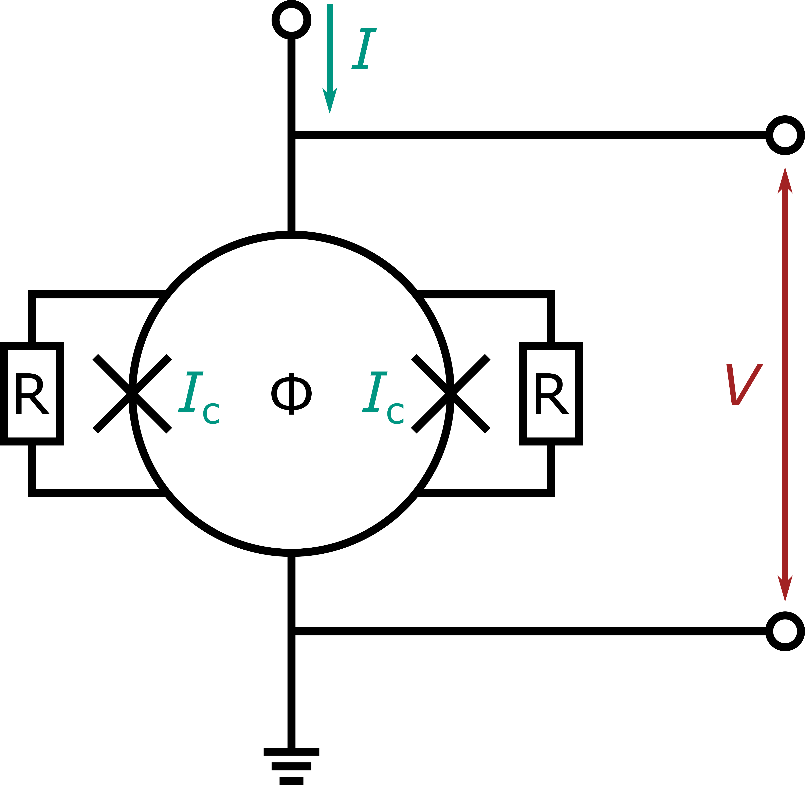
DC SQUID示意圖：兩個約瑟夫森接面（以叉號表示）並聯於一個電感為 L 的超導環上。偏置電流（bias current） I Φ ext [kit_squid_schematic]
直流超導量子干涉儀（DC SQUID）於 1964 年由福特研究實驗室（Ford Research Labs）的 Robert Jaklevic、John J. Lambe、James Mercereau 和 Arnold Silver 所發明，此後於 1962 年由 Brian Josephson 提出約瑟夫森效應，並於 1963 年由 John Rowell 和 Philip Anderson 在貝爾實驗室（Bell Labs）製造了第一個約瑟夫森接面(Anderson and Rowell 1963 ) 。SQUID的運作基於兩個宏觀量子現象：超導環路中的磁通量量子化，以及流經兩個接面的超導電流的量子干涉。
而超導迴路中若並聯兩個約瑟夫森接面，基於直流約瑟夫森效應，在沒有任何外部磁場的情況下，輸入電流（input current）\(I_{\text{input}}\) 會平均分佈到兩個分支。若對超導迴路施加一個小的外部磁場，則會開始在迴路中循環一個屏蔽電流（screening current）\(I_{s}\) ，該電流會產生一個抵銷外加磁通量的磁場，並創造一個與外部磁通量成正比的額外約瑟夫森相位。感應電流（induced current）的方向與\(I\) 在超導迴路的一個分支中相同，而在另一個分支中與 \(I\) 相反；總電流變為 \(\frac{1}{2}I_{\text{input}} + I_{s}\) 在某一分支，而\(\frac{1}{2}I_{\text{input}} - I_{s}\) 在另一分支。一旦任一分支中的電流超過約瑟夫森接面的臨界電流\(I_{c}\) ，則在接面上會出現電壓。
現在假設外部磁通量進一步增加，直到超過\(\Phi_{0}\) ，即磁通量量子的一半。由於超導迴路所包圍的磁通量必須是磁通量量子的整數倍，因此 SQUID 不再顯著屏蔽磁通量，而是能量上更傾向於將其增加到\(\Phi_{1}\) 。此時電流反向流動，抵禦了所容許的磁通量\(\Phi_{2}\) 與略超過 \(\Phi_{3}\) 的外部磁場之間的差異。隨著外部磁場的增加，電流逐漸減小，當磁通量剛好為 \(\Phi_{4}\) 時電流為零，並且當外部磁場進一步增加時，電流再次反向。因此，電流的方向會週期性地改變，每當磁通量增加半整數倍數的 \(\Phi_{5}\) 時就會改變一次，在最大電流時每增加半整數加整數倍數的 \(\Phi_{6}\) 時會改變一次，而在整數倍數時電流為零。
若輸入電流大於\(I_{c}\) ，則 SQUID 始終運作於電阻模式。此時，電壓即為外加磁場的函數，且週期等於\(\Phi_{0}\) 。由於直流 SQUID 的電流-電壓特性（current-voltage characteristic）具有遲滯現象（hysteretic），故在接面間連接一個並聯電阻\(R\) 以消除遲滯（在內稟電阻（intrinsic resistance）足夠的情況下）。屏蔽電流為應用磁通量除以環路的自感。因此\(\Delta\Phi\) 可估算為\(\Delta V\) 磁通量至電壓轉換器）(De Lacheisserie, Gignoux, and Schlenker 2002 ; Clarke and Braginski 2004 ) ，如下所示：
\[\begin{array}{r}
\Delta V = R \cdot \Delta I, \\
2 \cdot \Delta I = 2 \cdot \frac{\Delta\Phi}{L}, \\
\Delta V = \frac{R}{L} \cdot \Delta\Phi.
\end{array}\] 其中 \(L\) 為超導環路的自感（self inductance），本節的討論假設迴路中存在完美的磁通量量子化。然而，這僅對具有較大自感的較大迴路才成立。根據上述關係，這也意味著電流和電壓變化較小。實際上，迴路的自感\(L\) 並不這麼大。一般情況可通過引入一個參數
\[\lambda = \frac{i_{c}L}{\Phi_{0}}\]
其中\(i_{c}\) 為SQUID的臨界電流。通常\(\lambda\) 為一個數量級(De Waele and De Bruyn Ouboter 1969 ) 。
對稱直流 SQUID 的理論模型 Theoretical Model of Symmetric DC SQUIDs
直流 SQUID，如[fig-squid-schematic] 示意圖所示，由一個幾何自感為 L 的閉合超導迴路組成，該迴路被兩個並聯的約瑟夫森接面 JJ1 和 JJ2 中斷。偏置電流 \(I_{b}\) 從迴路一側注入，從另一側導出，導致電流分流並流經包含接面的兩個臂。
對於一個理想的對稱SQUID（即兩個接面完全相同），具體來說，假設滿足以下條件：
相同的接面 ：兩個約瑟夫森接面具有相同的臨界電流 (\(I_{c1} = I_{c2} = I_{c}\) )、正常態電阻 (\(R_{N1} = R_{N2} = R_{N}\) ) 和電容 (\(C_{1} = C_{2} = C\) )。
對稱的電感 ：總迴路電感 \(L\) 被認為在干涉儀的兩個臂之間平均分配，因此臂 1 的電感為 \(L_{1} = \frac{L}{2}\) ，臂 2 的電感為 \(L_{2} = \frac{L}{2}\) 。
總電流-相位關係的推導 Derivation of the Total Current- Phase Relation
直流 SQUID 的核心特性是其總電流-相位關係，它描述了總超導電流如何同時依賴於一個有效相位差和磁通量。推導過程始於對對稱 SQUID 迴路應用克希荷夫電流定律 (Kirchhoff’s current law) 和磁通量量子化條件。
假設接面具有標準的正弦 CPR，則通過兩個臂的超導電流 \(I_{1}\) 和 \(I_{2}\) 為： \[I_{1} = I_{c}\sin(\varphi_{1})\] \[I_{2} = I_{c}\sin(\varphi_{2})\] 其中 \(\varphi_{1}\) 和 \(\varphi_{2}\) 分別是 JJ1 和 JJ2 兩端的規範不變相位差。流經 SQUID 的總超導電流 \(I_{s}\) 是兩個並聯支路電流的總和： \[I_{s} = I_{1} + I_{2} = I_{c}\left( \sin\varphi_{1} + \sin\varphi_{2} \right)\]
相位差 \(\varphi_{1}\) 和 \(\varphi_{2}\) 並非獨立，它們透過穿過迴路的磁通量 \(\Phi\) 耦合。宏觀波函數的單值性要求，沿任何閉合超導迴路積分的總相位變化必須是 \(2\pi\) 的整數倍。當應用於通過兩個接面的 SQUID 迴路時，這個拓撲約束直接導致規範不變相位之間的以下關係： \[\varphi_{2} - \varphi_{1} = \frac{2\pi\Phi}{\Phi_{0}} + 2n\pi\]
使用三角恆等式 \(\sin A + \sin B = 2\sin(\frac{A + B}{2})\cos(\frac{A - B}{2})\) ，可得： \[I_{s} = 2I_{c}\sin(\frac{\varphi_{1} + \varphi_{2}}{2})\cos(\frac{\varphi_{2} - \varphi_{1}}{2})\] 將磁通約束代入餘弦項，得到： \[\begin{aligned}
I_{s} = & 2I_{c}\sin(\frac{\varphi_{1} + \varphi_{2}}{2})\cos(\frac{\pi\Phi}{\Phi_{0}}) \\
= & 2I_{c}\sin(\varphi_{1} + \frac{\pi\Phi}{\Phi_{0}})\cos(\frac{\pi\Phi}{\Phi_{0}})
\end{aligned}\]
這個方程式是對稱直流 SQUID的總電流-相位關係。
SQUID 臨界電流的磁通調變 Flux Modulation of SQUID Critical Current
整個 SQUID 的臨界電流，我們表示為 \(I_{\max(\Phi)}\) ，是在給定磁通量 \(\Phi\) 下，總超導電流 \(I_{s}\) 能達到的最大值。從總 CPR 中，我們可以直接寫出 SQUID 臨界電流的表達式： \[I_{\max(\Phi)} = 2I_{c}\left| {\cos(\frac{\pi\Phi}{\Phi_{0}})} \right|\] 其中 \(\Phi_{0} = \frac{h}{2e}\) 是磁通量量子。此調變是庫柏對波函數通過兩條路徑發生建設性與破壞性干涉的直接結果。 這個基本方程式描述了 SQUID 臨界電流作為穿過迴路的磁通量的函數的週期性調變。此關係的關鍵特徵是：
週期性 ：臨界電流是磁通量 \(\Phi\) 的週期函數，週期恰好為一個磁通量量子 \(\Phi_{0}\) 。測得的臨界電流每次振盪對應於磁通量變化一個 \(\Phi_{0}\) 。
建設性干涉 ：當磁通量是磁通量量子的整數倍，即 \(\Phi = n\Phi_{0}\) （n 為整數）時，臨界電流達到其絕對最大值 \(2I_{c}\) 。在這些磁通值下，餘弦項為 \(\pm 1\) 。
破壞性干涉 ：當磁通量是磁通量量子的半整數倍，即 \(\Phi = \left( n + \frac{1}{2} \right)\Phi_{0}\) 時，臨界電流達到其最小值 0。在這些點上，餘弦項為 0。
這種行為是宏觀量子干涉的直接而明確的體現。SQUID 作為庫柏對的量子干涉儀，其功能類似於邁克生 (Michelson) 或馬赫-曾德 (Mach-Zehnder) 干涉儀對光子的作用。
非理想性對 SQUID 性能的影響 (Impact of Non-Idealities on SQUID Performance)
真實世界中 SQUID 的性能和行為受到非理想因素的顯著影響，其中最主要的是超導迴路的有限電感和熱漲落 (thermal fluctuations) 的效應。
有限迴路電感：屏蔽參數 \(\beta_{L}\) Finite Loop Inductance: The Screening Parameter \(\beta_{L}\)
在任何物理 SQUID 中，連接兩個約瑟夫森接面的超導迴路都具有非零的幾何自感 L。此電感對裝置對外部磁通量 \(\Phi_{\text{ext}}\) 的響應有深遠的影響。當施加外部磁通時，SQUID 會根據冷次定律 (Lenz’s law) 和磁通量量子化原理，在迴路中感應出一個持久的、循環的屏蔽電流 \(I_{\text{cir}}\) ，以抵抗變化。
循環電流可以用個別接面電流表示為 \(I_{\text{cir}} = \frac{I_{2} - I_{1}}{2}\) 。對於具有正弦 CPR 的相同接面，這變為： \[I_{\text{cir}} = - I_{c}\cos(\varphi_{1} + \frac{\pi\Phi}{\Phi_{0}})\sin(\frac{\pi\Phi}{\Phi_{0}})\]
這揭示了一個自洽的回饋迴路：總磁通量 \(\Phi\) 決定了相位差，相位差決定了循環電流 \(I_{\text{cir}}\) ，而循環電流又反過來貢獻於總磁通量 \(\Phi\) 。這種內在回饋的強度由無因次的屏蔽參數 \(\beta_{L}\) 量化： \[\beta_{L} \equiv \frac{2LI_{c}}{\Phi_{0}}\]
參數 \(\beta_{L}\) 的值對 SQUID 的行為至關重要：
可忽略的屏蔽 (\(\beta_{L} \ll 1\) ) ：當電感或臨界電流很小時，自感應磁通量與磁通量量子相比可以忽略不計。在此極限下，\(\Phi \approx \Phi_{\text{ext}}\) ，SQUID 的行為符合理想模型。
強屏蔽 (\(\beta_{L} \gg 1\) ) ：當電感很大時，屏蔽效應佔主導地位。循環電流會調整以幾乎完全抵消外部磁通的任何變化，使總內部磁通 \(\Phi\) 固定在最接近 \(\Phi_{0}\) 整數倍的位置。
最佳區域 (\(\beta_{L} \approx 1\) ) ：對於大多數應用，特別是作為靈敏磁力計，需要達到最佳平衡。
動態行為與熱漲落 Dynamic Behavior and Thermal Fluctuations
當 SQUID 被偏置電流 \(I_{b}\) 驅動，且該電流超過其依賴於磁通的臨界電流 \(I_{\max(\Phi)}\) 時，它會轉變為電阻態，並在其端點出現有限電壓。為了模擬這種動態、耗散的行為，我們採用電阻與電容並聯接面 (RCSJ) 模型 。
在此模型中，每個理想的約瑟夫森元件（由其 CPR 描述）與一個電阻 \(R_{N}\) （代表準粒子穿隧）和一個電容 C（代表接面的幾何電容）並聯。通過 SQUID 每個臂的總電流是超導電流、正常（歐姆）電流和位移電流的總和。
最終的運動方程式是一組耦合的郎之萬方程式 (Langevin equations)： \[\frac{\Phi_{0}}{2\pi}C\frac{d^{2}\varphi_{1}}{dt^{2}} + \frac{\Phi_{0}}{2\pi R_{N}}\frac{d\varphi_{1}}{dt} + I_{c}\sin\varphi_{1} = \frac{I_{b}}{2} - I_{\text{cir}} + I_{N1}(t)\] \[\frac{\Phi_{0}}{2\pi}C\frac{d^{2}\varphi_{2}}{dt^{2}} + \frac{\Phi_{0}}{2\pi R_{N}}\frac{d\varphi_{2}}{dt} + I_{c}\sin\varphi_{2} = \frac{I_{b}}{2} + I_{\text{cir}} + I_{N2}(t)\]
這些方程式通過循環電流 \(I_{\text{cir}}\) 耦合，完全描述了在存在熱雜訊的情況下 SQUID 的古典動力學。
然而，真實世界的SQUID往往存在非對稱性（例如 \(I_{c1} \neq I_{c2}\) 或環路電感分配不均）。這種非對稱性雖然在傳統應用中常被視為缺陷，卻能將SQUID轉變為一個強大的分析工具。特別是對於一個高度非對稱的SQUID（例如 \(I_{c1} \gg I_{c2}\) ），其總臨界電流的磁通調變曲線的形狀，會直接反映較弱接面（weak junction）的電流-相位關係。透過精密量測SQUID的臨界電流 \(I_{\text{max}}\) 隨外部磁通量 \(\Phi_{\text{ext}}\) 的完整調變曲線，我們可以直接重構出弱連結的CPR，\(I_{\text{s,weak}}(\varphi)\) (Babich et al. 2023 ) 。這正是本研究採用非對稱SQUID來探測PtTe₂接面非傳統CPR的核心方法學基礎。
非對稱 SQUID：理論與應用 Asymmetric SQUIDs: Theory and Applications
雖然完全對稱的 SQUID 行為提供了量子干涉的基礎理解，但非對稱性的引入卻開啟了更豐富且更複雜的物理現象景觀。無論非對稱性是來自於不可避免的製程缺陷還是有意設計的工程考量，它都能將 SQUID 從簡單的干涉儀轉變為可調式、非互易的量子元件。
非對稱性的來源與分類 Sources and Classification of Asymmetry
SQUID 的非對稱性主要體現在兩個方面：
接面非對稱性 (Junction Asymmetry) ：接面非對稱性是指兩個接面的電學參數不同，包括：
臨界電流的差異：\(I_{c1} \neq I_{c2}\) ，這是最常見的非對稱性形式。
正常態電阻的差異：\(R_{N1} \neq R_{N2}\) ，影響接面的動態行為。
接面電容的差異：\(C_{1} \neq C_{2}\) ，決定接面的響應速度。
迴路非對稱性 (Loop Asymmetry) ：迴路非對稱性是指兩個接面在超導迴路中的位置不同，導致：
迴路電感分配不均：\(L_{1} \neq L_{2}\) ，其中 \(L_{1} + L_{2} = L_{\text{total}}\) 。
磁通耦合的差異：兩個接面對外部磁場的響應不同。
非對稱 SQUID 的理論分析 Theoretical Analysis of Asymmetric SQUIDs
對於一個非對稱 SQUID，其總電流-相位關係可以表示為： \[I_{s} = I_{c1}\sin(\varphi_{1}) + I_{c2}\sin(\varphi_{2})\]
考慮接面參數的非對稱性，我們可以引入非對稱參數 \(\alpha\) ： \[\alpha = \frac{I_{c1} - I_{c2}}{I_{c1} + I_{c2}}\]
當 \(\alpha = 0\) 時，系統退化為對稱 SQUID；當 \(\alpha \neq 0\) 時，系統表現出非對稱行為。
對於中等非對稱性 (\(|\alpha| < 1\) )，總臨界電流可以近似表示為： \[I_{\text{max}(\Phi)} = \left( I_{c1} + I_{c2} \right)\sqrt{\cos^{2}\left( \frac{\pi\Phi}{\Phi_{0}} \right) + \alpha^{2}\sin^{2}\left( \frac{\pi\Phi}{\Phi_{0}} \right)}\]
高度非對稱 SQUID：相位偏置探測器
當一個接面的臨界電流遠大於另一個時（\(I_{c}^{\text{Ref }} \gg I_{c}^{\text{Tgt}}\) ），非對稱 dc-SQUID 會進入「相位偏置探測器 （phase-biased detector）」的工作模式：強接面提供近似固定的相位參考，使弱接面（待測接面）的相位幾乎由外加磁通線性掃描，因而能由量測到的 \(I_{s}(\Phi)\) 反推較弱接面的電流-相位關係（Current-Phase Relation, CPR）。
物理圖像與基本假設
在高度非對稱極限中，我們將兩接面分別稱為：
本節先採用最常見、也最利於建立直覺的近似：
忽略迴路電感 （small-inductance limit）：迴路屏蔽效應可忽略，磁通-相位約束為 \(\varphi_{1} - \varphi_{2} = 2\pi\frac{\Phi}{\Phi_{0}}\) 。
參考接面 CPR 近似正弦 ：\(I_{s}^{\text{Ref }}\left( \varphi_{1} \right) = I_{c}^{\text{Ref }}\sin(\varphi_{1})\) 。
高度非對稱 ：\(I_{c}^{\text{Ref }} \gg I_{c}^{\text{Tgt}}\) ，且參考接面在臨界附近的斜率足以主導最大化條件，使其相位被「鎖住」。
總超電流與磁通-相位約束
令參考接面相位為 \(\varphi_{1}\) 、目標接面相位為 \(\varphi_{2}\) ，則總超電流可寫為
\[I_{s}\left( \varphi_{1},\varphi_{2} \right) = I_{c}^{\text{Ref }}\left( \varphi_{1} \right) + I_{c}^{\text{Tgt }}\left( \varphi_{2} \right)\]
其中 \(I_{c}^{\text{Tgt }}\left( \varphi_{2} \right)\) 是目標接面的 CPR（未知）。在忽略迴路電感的近似下，有
\[\varphi_{1} - \varphi_{2} = 2\pi\frac{\Phi}{\Phi_{0}} \Rightarrow \varphi_{2} = \varphi_{1} - 2\pi\frac{\Phi}{\Phi_{0}}\]
因此，對每個外加磁通 \(\Phi\) ，SQUID 的臨界電流（或在準靜態量測下的切換電流近似）可視為一個「最大化問題」：
\[I_{s}(\Phi) = \max\limits_{\varphi_{1}}\left\lbrack I_{c}^{\text{Ref }}\left( \varphi_{1} \right) + I_{c}^{\text{Tgt }}\left( \varphi_{1} - 2\pi\frac{\Phi}{\Phi_{0}} \right) \right\rbrack\]
高度非對稱極限下的「相位鎖定」與線性掃描
若 \(I_{c}^{\text{Ref }} \gg I_{c}^{\text{Tgt}}\) ，則最大化主要由參考接面決定。對正弦 CPR 的參考接面而言，最大值發生在
\[\varphi_{1} \approx \frac{\pi}{2}\left( \operatorname{mod}2\pi \right)\]
此時目標接面的相位近似為
\[\varphi_{2} \approx \frac{\pi}{2} - 2\pi\frac{\Phi}{\Phi_{0}}\]
因此測得的臨界電流可近似寫成「大偏置直流 + 目標 CPR」：
\[I_{s}(\Phi) \approx I_{c}^{\text{Ref }}\left( \frac{\pi}{2} \right) + I_{c}^{\text{Tgt }}\left( \frac{\pi}{2} - 2\pi\frac{\Phi}{\Phi_{0}} \right)\]
這個近似揭示了相位偏置探測器的核心：外加磁通 \(\Phi\) 等效地線性掃描目標接面相位 \(\varphi_{2}\) ，使得 \(I_{s}(\Phi)\) 的磁通依賴形狀直接攜帶 \(I_{c}^{\text{Tgt }}(\varphi)\) 的資訊。
量測切換電流與目標接面 CPR 的對應關係
在上式近似成立時，可建立一個簡潔的對應：
定義相位映射 \[\varphi \equiv \varphi_{2} \approx \frac{\pi}{2} - 2\pi\frac{\Phi}{\Phi_{0}}\]
用量測得到的臨界電流扣除參考接面的 DC 偏置 \[I_{c}^{\text{Tgt}(\varphi)} \approx I_{s}(\Phi) - I_{c}^{\text{Ref }}\left( \frac{\pi}{2} \right)\]
實作時常見做法是：先以 \(\max I_{s}(\Phi)\) 估計 \(I_{c}^{\text{Ref }}\left( \frac{\pi}{2} \right)\) （或以獨立量測校準參考接面），再將 \(I_{s}(\Phi)\) 平移並重新標定橫軸為相位 \(\varphi\) ，即可得到目標接面的 CPR 之第一版重建。
適用條件與常見偏差來源
雖然「直讀」非常直觀，但在高精度 CPR 量測中，以下因素會使 \(\varphi_{1} \approx \frac{\pi}{2}\) 的鎖定條件失效，導致兩接面 CPR 混疊：
導數鎖定條件不足 ：最大化條件與 \(\partial\frac{I}{\partial}\varphi\) 有關；若參考接面在臨界附近的斜率不夠主導，則 \(\varphi_{1}\) 會偏離 \(\frac{\pi}{2}\) ，使得 \(I_{c}^{\text{Tgt}}\) 的映射失真。
非零迴路電感與額外電感 ：一旦迴路屏蔽不可忽略，約束關係需加入 \(L\) 與循環電流，\(\varphi_{1} - \varphi_{2}\) 不再等於 \(2\pi\frac{\Phi}{\Phi_{0}}\) 。
參考接面 CPR 非正弦 ：例如 nanobridge 或長接面可能呈現 sawtooth/高諧波，會改變鎖定相位位置與映射規則。
因此，嚴謹的 CPR 萃取通常會以「forward model」方式：保留 \(I_{c}^{\text{Tgt }}(\varphi)\) 的參數化（如傅立葉展開）並在每個 \(\Phi\) 上做最大化以產生 \(I_{c}^{\text{pred }}(\Phi)\) ，再對量測曲線做全域擬合，能同時納入電感與參考接面非理想性。
二碲化鉑 (\(\text{PtTe}_{2}\) )：拓樸半金屬中的非傳統超導近接效應
二碲化鉑（Platinum ditelluride, \(\text{PtTe}_{2}\) ）是一種過渡金屬二硫屬化物（Transition Metal Dichalcogenide, TMD），屬於通式為 MX₂ 的材料家族，近年來因其豐富的物理內涵而備受關注。在結構上，二碲化鉑結晶為1T相 (CdI₂-type)，呈現出一種由鉑（Platinum, \({}_{78}\mathrm{\text{Pt}}\) ）原子層夾在兩層碲（Tellurium, \({}_{52}\mathrm{\text{Te}}\) ）原子層之間的八面體配位層狀結構。這種層狀特性使其可以透過機械剝離法，輕易地獲得從塊材到幾個原子層甚至單原子層厚度的二維薄片，為構建凡德瓦爾異質結構 (van der Waals heterostructures) 和平面型奈米元件提供了極大的可能性。 在電子特性方面，二碲化鉑最引人注目的特徵是它已被理論預測並由角解析光電子能譜 (ARPES) 等實驗技術證實為一種第二類狄拉克半金屬 (Type-II Dirac Semimetal)。與傳統的第一類狄拉克半金屬（如石墨烯 Graphene）中點狀的費米面不同，第二類狄拉克半金屬擁有極度傾斜的狄拉克錐，使得電子和電洞口袋在狄拉克點處相切接觸。這些受晶體對稱性保護的狄拉克點，賦予了二碲化鉑獨特的低能電子態和輸運性質。特別是其拓樸保護的表面態，具有螺旋自旋-動量鎖定（helical spin-momentum locking）的特性，這意味著電子的動量與其自旋方向是鎖定的，賦予了二碲化鉑獨特的低能電子態和輸運性質，使其成為研究拓撲物理與超導性之間交互作用的理想材料平台。
II型狄拉克半金屬的二碲化鉑表徵。Ref.[yan_lorentz-violating_2017]
a, b：I型與II型狄拉克費米子的示意圖。 c, d：二碲化鉑晶體結構的側視圖與頂視圖。綠色球體代表 Pt 原子，紅色球體代表 Te 原子，黑色虛線標示單位晶胞。 e：(001) 平面的體相與投影表面(Brillouin Zone）。紅點（標記 D）顯示三維狄拉克點的位置。 f：室溫下測得的拉曼光譜（Raman spectroscopy）。 g：室溫下二碲化鉑的 X 射線繞射（X-ray diffractometer, XRD）圖譜，插圖為邊長數毫米的單晶樣品照片。 h：電子束能量 70 eV 下的低能量電子衍射（Low-energy electron diffraction, LEED）圖樣。
值得注意的是，塊材二碲化鉑本身並沒有超導性，然而，在本研究所探討的約瑟夫森接面元件中，二碲化鉑作為「弱連結 (weak link)」區域，其局部超導性主要是透過與具有更高超導轉變溫度的電極（如鈮鈦合金 Niobium–titanium, Nb-Ti）接觸，經由超導近接效應 (superconducting proximity effect) 所誘導產生。這就構成了一個超導體-狄拉克半金屬-超導體 (superconductor-Dirac semimetal-superconductor, S-DSM-S) 的混合結構。
在這個S-DSM-S混合結構中，超導電流的傳輸是由由二碲化鉑內部獨特的狄拉克費米子所中介的。理論預測，這種由拓樸表面態主導的傳輸機制，會促進多重安德烈夫反射(multiple Andreev reflections, MAR))過程，從而導致一個偏離標準正弦函數的非傳統電流-相位關係(Cuozzo et al. 2024 ) 。此外，外加磁場可以與表面態的自旋相互作用，進而調控CPR的形式，甚至產生約瑟夫森二極體效應（Josephson Diode Effect, JDE），即正反方向的臨界電流不相等（\(I_{c}^{+} \neq I_{c}^{-}\) ），深入研究二碲化鉑約瑟夫森接面的電學特性，對於理解拓撲半金屬中的近接超導物理，以及探索其在未來量子技術中的應用潛力，具有至關重要的意義。
因此，本研究的理論假說是：透過將PtTe₂作為弱連結整合進一個非對稱SQUID中，我們不僅能夠直接觀測到其預期中的非正弦CPR，還能利用外部磁場作為調控手段，系統性地研究其拓樸性質如何體現在宏觀的量子輸運現象上。
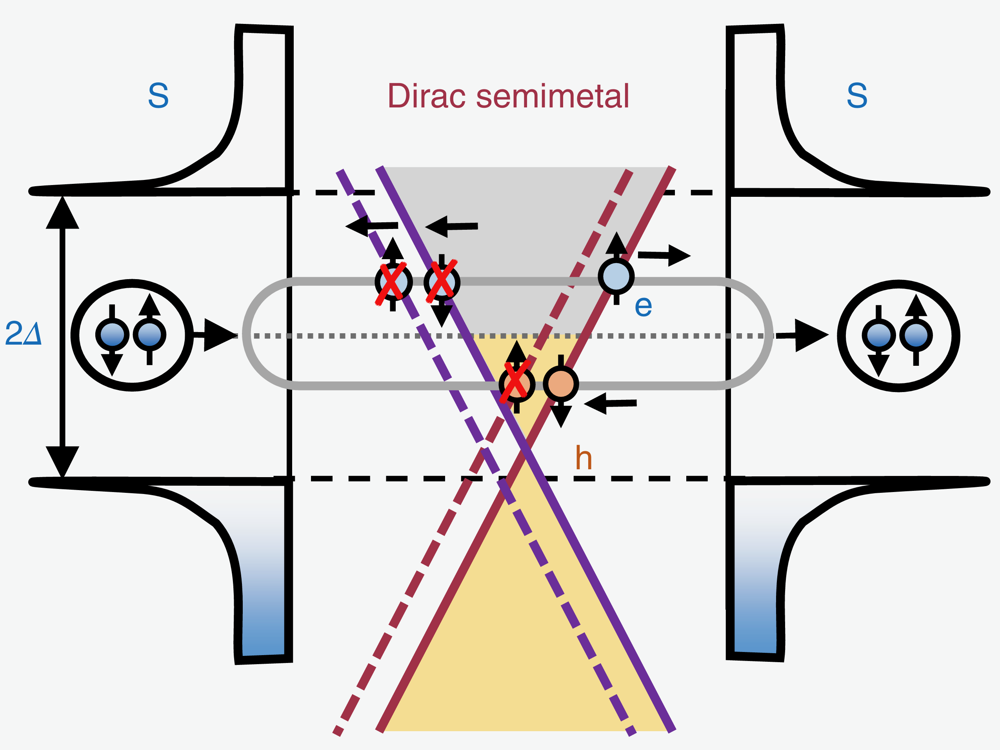
S-DSM-S約瑟夫森接面示意圖(Type-I)。Ref.[li_4-periodic_2018]
狄拉克錐由I型傾斜轉變到II型。Ref.[PhysRevB] .101.214508
\(k_{y}\) 軸朝相反方向傾斜之示意。能量軸位於平面外。與費米能相交之狄拉克錐截面，分別以實線（電子）與虛線（空穴）所示之橢圓標示。狄拉克節點位於 \(k_{y}\) 軸上的 \(\pm k_{D}\) 。下方面板則示意在所示 \(\zeta\) 值下狄拉克錐的傾斜情形。
能階不匹配：狄拉克節點遠離費米能階，低能輸運以體相平庸能帶為主
雖然 \(1T - \text{PtTe}_{2}\) 已由 ARPES 與第一性原理計算確認具有受晶體對稱性保護的 II 型狄拉克錐與相關表面態，但在「化學計量、未特別調控化學勢」的典型塊材條件下，其狄拉克節點能量 \(E_{D}\) 往往位於費米能階 \(E_{F}\) 的深束縛能處（文獻整理常見尺度為 \(|E_{D} - E_{F}| \approx 0.8\text{ eV}\) ），使得狄拉克節點附近的線性色散並不直接主宰 \(E \approx E_{F}\) 的低能激發與直流輸運。(Yan et al. 2017 ; Xu et al. 2018 )
因此，在本研究關心的「近接超導輸運／約瑟夫森超電流」能量尺度（以 \(E_{F}\) 附近的準粒子為核心）下，實際參與傳輸的主要是多條穿越 \(E_{F}\) 的三維體相能帶所形成之電子/電洞費米口袋；也就是說，\(\text{PtTe}_{2}\) 的導電更接近「多能帶半金屬」情境，而非「由拓樸表面態主導」的單一通道輸運。此觀點也與磁輸運與量子震盪分析相一致：在 \(\text{PtTe}_{2}\) 的 SdH 等訊號中，對應能帶的 Berry phase 常呈現平庸特徵，並顯示多能帶導電的行為。(Fei et al. 2018 ; Pavlosiuk and Kaczorowski 2018 )
對本研究之意涵 ：在未能提供「化學勢已被閘極/摻雜/界面電荷轉移有效拉近 \(E_{D}\) 」的直接證據前，本論文在解讀 \(\text{PtTe}_{2}\) 弱連結所呈現的非正弦 CPR 與可能的約瑟夫森二極體效應（JDE）時，將以「體相多能帶（含自旋軌道耦合、Zeeman 與軌域效應、介面透明度不均、非對稱 SQUID 幾何與自場等）」作為更保守且可檢驗的主導機制框架；拓樸表面態的主導貢獻則視為需額外驗證（例如：閘極可調之臨界電流/正常態電導、厚度依賴、或能譜/表面敏感量測）才能成立的進一步假說。(Yan et al. 2017 )
實驗方法
本章詳細闡述本研究所使用的完整實驗流程與設備，涵蓋了從二維材料的取得、奈米元件的製備，到極低溫電學量測系統的架設與操作。
元件製備 (Device Fabrication)
本節詳述使用機械剝離法得到二碲化鉑薄片，並透過多道微影與沉積步驟完成SQUID元件的完整流程。
助熔劑生長法 (Self‐Flux Method)
本實驗所使用之二碲化鉑為國立成功大學凝態物理實驗室呂欽山教授所提供(Hsueh et al. 2024 ) ，其使用助熔劑法生長而成。助熔劑法是一種功能強大且廣泛使用的技術，將欲生長晶體的成分（溶質）溶解於合適的溶劑（助熔劑）中，再藉由緩慢冷卻溶液來引發單晶結晶。
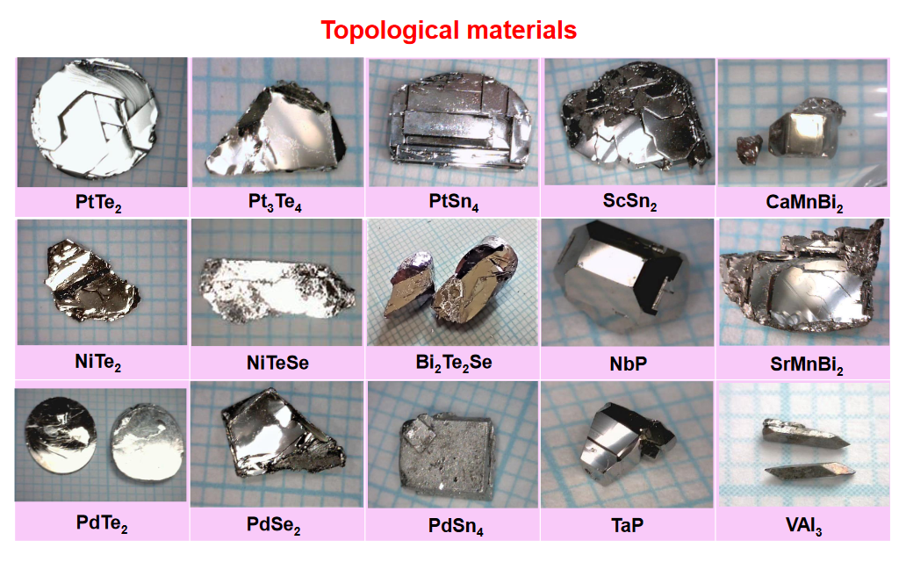
拓樸材料晶體。Ref.[topological_materials]
機械剝離法 (Mechanical Exfoliation Method)
本章將詳細說明本實驗使用機械剝離法 (Mechanical Exfoliation Method) 得到原子級厚度的二維材料層狀薄片 (Flake) 的完整流程與方法，包括基板預處理、膠帶黏貼剝離。
基板準備 (Substrate Preparation)
本實驗使用的基板為低電阻重參雜 P 型單面矽/熱氧化二氧化矽基板 (NOVA electronics #HS39626-OX：4”, P-type,
將 7×7mm 大小的破片放入 140 °C 的二甲基亞碸 (DMSO, Dimethyl sulfoxide) 溶劑中靜置 1 小時，以去除基板上保護用的正型光阻（MICROPOSIT™ S1813 G2 Photoresists）薄膜。
將破片放入 40 °C 的丙酮（Acetone）溶劑中去除 DMSO，約 1 分鐘後再放入異丙醇 (IPA) 溶劑中進行潤洗後取出，接著使用氮氣槍吹乾基板表面。
使用Henniker plasma HPT-100電漿處理系統，以氧電漿（\(O_{2}\) Plasma）進行基板表面清潔，使用前用100% 運轉功率、50 標準立方公分每分（Standard Cubic Centimeter per Minute, SCCM），進行5分鐘的腔體清潔，過程中需觀察腔體內電漿顏色，以確保管路中沒有氧氣以外的其他氣體。腔體清潔結束後使用100%運轉功率、40 SCCM，進行10分鐘的基板表面清潔。完成後儘速將基板放置於手套箱內開始進行剝離以避免水氣附著。
二維材料剝離 (2D Materials Exfoliation)
本實驗使用的膠帶為 Nitto SPV-224PR-MJ，以下簡稱藍膠。
確認手套箱內水氧值皆小於 0.5ppm，將零號藍膠 (Tape 0) 膠面朝上固定於平面，用鑷子將夾取二碲化鉑塊材（Bulk）放置於 Tape 0 上。
一號藍膠 (Tape 1) 膠面朝下覆蓋於 Tape 0 後使用棉棒輕推表面確保確實兩膠面接觸，撕開兩片膠帶實現層與層的分離。
重複步驟 2，直到塊材佈滿大於 7×7mm 大小的面積範圍後將 Tape 0 用另一片藍膠覆蓋後收納備用。
將 Tape 1 膠面朝上固定於平面，二號藍膠 (Tape 2) 膠面朝下覆蓋於 Tape 1 後使用棉棒輕推表面確保確實兩膠面接觸，撕開兩片膠帶實現層與層的分離後將 Tape 1 用另一片藍膠覆蓋後收納備用。
重複步驟 4，直到塊材分布密度合適，以二碲化鉑為例通常為 Tape 4 或 5。
使用電磁加熱烤盤以 120 °C 加熱基板 10 分鐘後靜置 1 分鐘。
將基板放置於平面，藍膠膠面朝下並傾斜一小角度使其一側接觸基板後使用棉棒輕推表面，確保膠面與基板表面確實接觸且無氣泡後靜置 5 分鐘。
撕開膠帶實現層與層的分離後將基板置於可重複使用真空密封食品壓縮袋，使用手持式真空保鮮機抽真空後拿出手套箱。
儘速將基板移動至旋轉塗佈機 (Spin Coater) 使用聚甲基丙烯酸甲酯（Poly(methyl methacrylate), PMMA A6）正向抗蝕劑以 500 rpm 旋轉 5 秒, 以高加速度升速至最終轉速 4000 rpm，此旋塗步驟總時長為 55 秒。
使用 180 °C 預烤 (Prebake) 基板 3 分鐘即完成機械剝離流程。
電子束微影 (E-Beam Lithography, EBL)
本研究中所有奈米級圖案的定義，例如對準標記與元件電極，均是透過電子束微影技術完成。整個流程在一台 Raith PIONEER Two 掃描式電鏡/電子束微影系統上執行。以下將詳述其製備、曝光與顯影的具體步驟。
抗蝕劑準備 (Resist Preparation)
在進行圖案定義之前，首先須在樣品表面旋塗一層電子束抗蝕劑。本實驗選用聚甲基丙烯酸甲酯 (Poly-methyl methacrylate), PMMA) A6 等級作為正向抗蝕劑。旋塗程序分為兩階段：首先以 500 rpm 的低速旋轉 5 秒，以確保抗蝕劑均勻散佈，隨後以 4000 rpm 的高速旋轉 55 秒，以達到最終所需的厚度。旋塗完成後，樣品被放置於 180°C 的熱板上烘烤 180 秒，目的是為了完全去除抗蝕劑中的溶劑並使其固化。
圖案曝光 (Pattern Exposure)
抗蝕劑準備完成後，樣品被送入 EBL 系統的真空腔體中進行圖案曝光。所有的曝光步驟均在 20 kV 的加速電壓下進行。此流程同樣分為兩步：
對準標記 (Alignment Markers) ：第一步是在樣品上定義大面積的對準標記 (alignment markers)，這些標記將作為後續高精度圖案疊對的基準。為實現快速曝光，此步驟選用了 120 µm 的大光圈 (aperture) 以獲得約 12 nA 的較大電子束流，並採用 370 μC/cm² 的面積劑量 (area dose) 進行寫入。
接觸電極 (Contact Electrodes) ：在系統通過對準標記精確鎖定 PtTe₂ 薄片的位置後，進行第二步高解析度的接觸電極圖案曝光。為確保圖案的精細度與邊緣的陡峭度，此步驟換用 30 µm 的小光圈，將束流精細地控制在約 0.3 nA，並以 375 μC/cm² 的劑量進行寫入。
顯影 (Development)
曝光完成後，將樣品從系統中取出進行化學顯影，以溶解經電子束照射後分子鏈斷裂的 PMMA 區域。樣品被沉浸於甲基異丁基酮 (MIBK) 與異丙醇 (IPA) 體積比為 1:3 的混合溶液中。整個顯影過程在 23°C 的恆溫環境下精確控制 50 秒。隨後，為終止顯影反應，樣品被迅速轉移至純 IPA 溶液中浸泡 20 秒，以沖洗並去除殘留的顯影劑。完成此步驟後，樣品表面即形成了所需圖案的抗蝕劑模板，可供後續的金屬沉積與舉離 (lift-off) 製程使用。
元件特性分析系統 (Device Characterization Setup)
本研究旨在探討特定樣品在低溫環境及外加磁場下的電運輸性質 (Electrical Transport Properties)。為此，我們搭建了一套基於四端點量測法 (Four-Point Probe Method) 又名開爾文測量法（Kelvin sensing）的直流電學量測系統。本章節將詳述其量測原理、實驗架構與操作步驟。
量測裝置 (Measurement Setup)
稀釋制冷機 (Dilution Refrigerator)
為實現對樣品在毫開爾文 (milli-Kelvin, mK）溫度區間的量子現象觀測，本研究採用了一套 Bluefors 公司製造的 LD-400 型濕式稀釋制冷系統（Wet Dilution Refrigerator System）。該系統能夠提供約40 mK的穩定基礎溫度（Base Temperature）。提供如此低的實驗環境至關重要，其主要目的有二：第一，確保樣品溫度遠低於其超導轉變溫度 (Tc)10K，使樣品能完全進入並穩定維持在超導態；第二，有效抑制因熱能 (\(k_{B}T\) )引起的熱擾動（Thermal Fluctuations），從而降低量子退相干（Quantum Decoherence） 效應，使得如電流-相位關係（Current-Phase Relation） 等微弱的宏觀量子現象（macroscopic quantum effects)）得以被精確地量測。為進一步提升實驗效率，本系統配備了底部裝載快速樣品更換（Bottom-Loading Fast Sample Exchange, FSE） 機構。該機構允許在主制冷系統各級冷盤（如 4K plate 與 Still plate）皆保持在低溫狀態的情況下，獨立地將樣品載台（Sample Holder） 取出更換。相較於需要數日才能完成一次完整熱循環（升溫至室溫再降溫）的傳統方式，FSE 系統將更換樣品所需的週期縮短至14小時 。此功能極大地提高了樣品測試的效率，對於需要進行多輪製程參數迭代與多個元件篩選及特性比對的研究工作至關重要。
超導磁鐵系統 (Superconducting Magnet System)
為研究樣品在不同磁場強度與方向下的物理特性，本實驗系統集成了一套 Bluefors 製造的三維向量磁鐵 (3D Vector Magnet)。該磁鐵系統的核心由三組相互正交的超導線圈構成，能夠在主軸 (Z-axis) 方向上產生最高達 9 特斯拉 (Tesla) 的磁場，並在與之垂直的兩個次軸 (X-axis and Y-axis) 方向上分別產生最高 1 T 的磁場，此即為一組 9-1-1 T 組態。這種三軸向量能力使得我們可以在三維空間中產生任意方向的磁場向量，從而對樣品的各向異性 (anisotropy) 或需要精確磁場對位的現象進行深入探討。
整個磁鐵系統的驅動與控制由一套 American Magnetics, Inc. (AMI) 的整合式電源供應系統負責。該系統包含三組獨立的磁鐵電源，其輸出電流由一台 AMI Model 430 電源程式控制器進行精密調控。此控制器不僅確保了各軸磁場的穩定性，更允許我們透過電腦程式自動化地控制磁場向量的大小、方向以及場掃描速率 (ramp rate)，以執行複雜的磁場掃描序列。
低溫線路與客製化 PCB 樣品座 (Cryogenic Wiring and Custom PCB Sample Holder)
為了在將直流與射頻 (RF) 信號從室溫儀器傳導至毫開爾文溫區的量子元件時，最大程度地抑制傳導熱負載 (conducted heat load) 與電磁雜訊，本實驗搭建了一套多級濾波與熱錨方案。此方案的核心在於混合使用了商業化的低溫濾波器模組與客製化的終端樣品電路板。
直流/低頻線路濾波 (DC/Low-Frequency Line Filtering)
所有通往樣品的直流與低頻控制線路，都經過一套 QDevil 公司生產的 QFilter 模組進行濾波。此模組被牢固地安裝於稀釋制冷機的混合腔冷盤 (Mixing Chamber plate) 上，以確保信號線及濾波器元件本身都能與 mK 溫區達到充分的熱平衡。我們採用的是標準的雙級濾波組態，將一個 24 通道的低頻 RC 濾波板與一個 24 通道的高頻 LC 濾波板進行串聯。RC 濾波級的衰減起始於 65 kHz，而 LC 濾波級則針對 225 MHz 以上的射頻雜訊提供有效衰減。
客製化樣品座與高密度線路 (Custom Sample Holder and High-Density Wiring)
經過主濾波級後，信號透過一套高密度、模組化的線路連接至安裝有兩個樣品 (2 X PCB) 的客製化樣品座。該線路方案利用了多芯數的 Micro-D 連接器（如 51-pin 及 100-pin）對多達 48 個獨立的信號通道進行整合與管理。在制冷機內部，這些信號透過多組（例如 4 組 12 對）磷青銅雙絞線 (Twisted Pair) 進行傳輸。最終，在室溫端的接口面板，線路被轉換為 Fischer 24-pin 連接器，以便與外部的量測儀器相連。整個信號路徑的設計旨在確保信號完整性、最小化串擾 (crosstalk)，並提供穩固可靠的連接。
高頻線路濾波 (High-Frequency Line Filtering)
對於 RF 控制線路，則採用了不同的濾波策略。在同軸線路中，我們安裝了 Low-loss Infrared (IR) Filter，其主要功能是阻擋來自較高溫級的紅外光子直接輻射到樣品，以降低對量子態的干擾。該濾波器在有效阻擋紅外輻射的同時，對 DC 至 6 GHz 的工作信號僅有小於 1 dB 的插入損耗。
電流-電壓 (I-V) 量測系統 (Current-Voltage(I-V) Measurement System)
為了全面性地鑑定元件的電學特性，本研究建立的 I-V 量測系統涵蓋了兩個關鍵階段：(1) 在室溫下對大量元件進行快速的初步篩選；(2) 在極低溫環境中對通過初篩的元件進行高精度的特性量測。
室溫初步特性鑑定 (Room-Temperature Pre-characterization)
在此測試組態中，激勵電流 (stimulus current) 由一台 Keithley 2400 源-量測單元 (SMU) 提供，該儀器被設定於電壓源模式，其輸出經過一個 100 kΩ 的串聯電阻轉換為電流源。此電流隨後被路由至待測元件，而元件上的響應電壓則由一台 Basel Precision Instruments (BPI) Model SP1004 低噪聲差動放大器進行放大，並由 Keithley DMM6500 萬用電錶讀取。為了能對晶片上的大量元件進行高效的自動化測試，整個信號的路由與切換由兩台 Quantum Machines 生產的 24 通道 QDAC 模組構成的矩陣交換器進行管理。
極低溫 I-V 特性精細量測 (Cryogenic I-V Characterization)
低溫下的高精度 I-V 量測，其核心由一套由台夫特理工大學 (Delft University of Technology) 設計與製造、專為低溫量子測量開發的、電池供電的 IVVI-DAC2-rack 系統執行。採用電池供電是為了實現與外部儀器電源的電氣隔離 (galvanic isolation)，從根本上消除接地迴路 (ground loops) 和來自電力線的雜訊。
信號路由與儀器配置 (Signal Routing and Instrument Configuration) 從低溫恆溫器引出的主線纜，其信號首先被轉換至四個 24-pin 的 Fischer 接口面板。實驗時，根據待測元件的位置，我們從中選取兩路 Fischer 插頭，將其連接至兩台 24 通道的 Matrix-rack 模組化跳線盤。這個 Matrix-rack 作為連接低溫世界與室溫儀器的中樞，其內部的 MCX 連接器跳線面板允許我們對每一條獨立的信號線進行靈活、精確的配置。對於一組特定的四端點量測，指定的線路通過 MCX-to-LEMO 轉接線，被分別連接至 IVVI-rack 中的功能模組：
電流源 (Current Source) : 負責施加偏壓的線路 (I+,I−) 被連接至一個 S4m 電流源模組 。該模組的輸出電流量程可手動設置，而其精確的電流大小則由 IVVI-rack 內建的 DAC 進行掃描控制。我們採用此模組的對稱 (symmetric) 輸出模式進行量測。在此模式下，模組同時提供正、負兩路相對於地電位對稱的電壓輸出，其主要優點是能夠最小化樣品上可能出現的共模電壓 (common-mode voltage)，並有效倍增電壓源的輸出擺幅 (output swing)。
電壓量測 (Voltage Measurement) : 負責感測電壓的線路 (V+,V−) 被連接至一個 M2b 電壓量測模組 。此模組是專為實現極低的 1/f 噪聲而優化的 JFET 輸入級差動放大器，其輸入電壓噪聲密度在 10 Hz 以上時低至 2 nV/√Hz。
經過 M2b 模組放大後，類比電壓信號從機架的隔離環境中被輸出，並最終由一台 Keithley DMM6500 6½-Digit 數位萬用電錶進行高精度數位化及數據記錄。
射頻信號產生器 (RF Signal Generator)
為了對元件進行射頻下的特性分析，例如 Shapiro steps 量測，本實驗系統整合了一台 Rohde & Schwarz (R&S) SGS100A 射頻信號產生器。該儀器能夠產生頻率範圍從 1 MHz 至 20 GHz 的高穩定度、低相位雜訊的正弦波信號。
信號的輸出功率可在大範圍內進行精密調控。在送入低溫恆溫器之前，RF 信號會經過一系列的同軸衰減器 (coaxial attenuators) 進行大幅衰減，以確保最終施加於樣品上的功率處於適當的微弱範圍，避免過大的 RF 功率對樣品造成過熱或破壞其超導態。整個 RF 信號路徑的校準與衰減值的計算是確保量測結果準確性的關鍵步驟。
數據擷取框架：QCoDeS (Data Acquisition Framework: QCoDeS)
本研究的所有實驗控制、儀器協調與數據擷取流程，均基於 QCoDeS (Quantum Code and Data acquisition System) 軟體框架實現。QCoDeS 是一個基於 Python 的開源框架，由哥本哈根/代爾夫特量子計算聯盟等機構開發，旨在為量子計算與凝聚態物理實驗提供一個標準化、模組化的軟體基礎設施。我們選用此框架的核心原因在於其強大的儀器抽象能力與結構化的數據管理模型，這使得複雜的實驗流程得以簡化，並確保了數據的高度可追溯性。
在我們的具體實現中，所有實驗儀器（如 IVVI-rack 模組、信號產生器、數位電錶等）均被分別封裝為 QCoDeS 的 Instrument 物件，其可控屬性則對應為 Parameter。整個實驗裝置由一個 Station 物件進行統一管理，其詳細配置透過 YAML 檔案進行定義與載入，確保了實驗設置的靈活性與可重現性。所有的量測序列，無論是簡單的線性掃描還是複雜的多維掃描，都透過 QCoDeS 的 Measurement 上下文管理器執行。在每次量測運行 (run) 開始時，系統會自動擷取所有儀器參數的快照 (snapshot) ，並與實驗數據一同儲存。
所有實驗數據都被結構化地儲存於一個以 SQLite 為後端的本地數據庫中。每一個 DataSet 實例都包含完整的元數據、儀器快照以及量測結果，並被賦予一個全域唯一識別碼 (GUID) ，極大地增強了數據的可追溯性、完整性與共享便利性。
實驗實現 (Experimental Realization)
坐標系與磁場定義 (Coordinate System and Magnetic Field Definitions)
在本研究中，我們先定義樣品座標系如下：樣品平面為 \(x\) –\(y\) 平面， \(x\) 軸沿約瑟夫森接面中的電流傳輸方向（從一側超導電極指向另一側）， \(y\) 軸沿接面寬度方向，\(z\) 軸則垂直於樣品平面，由基板指向探針。
實驗所使用的三軸向量磁鐵可以在三個互相正交的方向產生磁場分量 \(B_{x}\) , \(B_{y}\) , \(B_{z}\) ，其定義如下：
\(B_{x}\) ：平行於電流方向、位於樣品平面內的磁場分量（沿 \(x\) 軸）。
\(B_{y}\) ：垂直於電流方向、位於樣品平面內的磁場分量（沿 \(y\) 軸）。
\(B_{z}\) ：垂直於樣品平面的磁場分量（沿 \(z\) 軸）。
除非另有特別說明，本文中提到的面內（in-plane）磁場係指由 \(\left( B_{x},B_{y} \right)\) 組合而成的平面內磁場，而面外（out-of-plane）磁場則專指 \(B_{z}\) 。
I-V 特性 (I-V Characteristics)
元件的基礎直流傳輸特性，是透過在恆定溫度下，量測其電壓-電流 (I-V) 特性曲線來進行鑑定。一條具代表性的 I-V 曲線，是透過緩慢掃描偏壓電流 (\(I_{\text{bias}}\) ) 並同時記錄元件兩端的電壓降 (V) 而獲得的。
當偏壓電流從零開始增加時，元件首先展現出零電壓的狀態 (V=0)，此即為直流約瑟夫森效應 (DC Josephson effect) 所導致的無耗散超導電流分支。此超導態可一直維持，直到偏壓電流超過一個臨界閾值，此時接面會突然切換 (switch) 至一個具有有限電壓的電阻態。實驗上觀測到的這個切換點，我們定義為切換電流 (\(I_{\text{sw}}\) ) 。
在切換至電阻態後，I-V 特性遵循一個線性的歐姆關係，其斜率 (\(d\frac{V}{d}I\) ) 即為接面的正常態電阻 (\(R_{N}\) ) 。
當偏壓電流反向掃描（從高電流向零點掃描）時，我們觀察到顯著的遲滯現象 (hysteretic behavior) 。接面並不會在 \(I_{\text{sw}}\) 處立即返回超導態，而是維持在電阻分支上，直到電流降低至一個更小的值，即回滯電流 (\(I_{r}\) ) 時，才重新「掉落」回零電壓的超導態。
這種由切換電流與回滯電流之間巨大差異 (\(I_{r} \ll I_{\text{sw}}\) ) 所構成的遲滯迴線，是欠阻尼 (underdamped) 約瑟夫森接面的典型特徵。此行為可由 Stewart-McCumber 模型進行描述，其遲滯程度由無因次的史都華-麥肯柏參數 \(\beta_{c} = \left( 2\frac{e}{ħ} \right)I_{c}R_{N}^{2}C\) 所決定。觀測到的顯著遲滯意味著此接面的 \(\beta_{c} > 1\) 。
夫朗和斐干涉圖樣 (Fraunhofer Interference Patterns)
為了進一步探測接面內部超導電流的空間分佈特性，我們量測其臨界電流 \(I_{c}\) 對外加磁場的依賴關係。實驗中，我們利用三軸向量磁鐵施加一個沿樣品法向（\(z\) 軸）的磁場 \(B_{z}\) ，並在每一個固定的磁場值下，量測其 I–V 特性曲線。藉由將接面從超導態驅動至電阻態所對應的切換電流 \(I_{\text{sw}}\) ，我們將其視為該磁場下的臨界電流，即 \(I_{c\left( B_{z} \right)} = I_{\text{sw}}\left( B_{z} \right)\) 。
量測結果清楚顯示臨界電流隨 \(B_{z}\) 變化的干涉圖樣。在零磁場 (\(B_{z} = 0\) ) 時，臨界電流達到最大值 \(I_{c,0}\) ；隨著 \(|B_{z}|\) 的增加，\(I_{c\left( B_{z} \right)}\) 呈現近似週期性的振盪，並在特定磁場值處壓低至接近零。整體包絡線與光學中的單狹縫夫朗和斐繞射 (Fraunhofer diffraction) 圖樣高度相似，因此我們將此 \(I_{c}\) –\(B_{z}\) 依賴稱為夫朗和斐干涉圖樣 。
在理想的、超導電流沿接面寬度方向均勻分佈的短接面模型中，臨界電流與穿過接面有效面積 \(A_{\text{eff}}\) 的磁通量 \(\Phi\) 之間的關係可寫成 \[I_{c}\left( B_{z} \right) = I_{c,0}\left| \frac{\sin(\pi\frac{\Phi}{\Phi_{0}})}{\pi\frac{\Phi}{\Phi_{0}}} \right|,\] 其中 \(\Phi = B_{z} \cdot A_{\text{eff}}\) 為穿越接面的磁通量，而 \(\Phi_{0} = \frac{h}{2e}\) 為超導磁通量量子。此關係式預測，當 \(\Phi = n\Phi_{0}\) （\(n\) 為非零整數）時，\(I_{c}\) 會出現一系列極小值，其間距直接反映出 \(A_{\text{eff}}\) 的大小。
從實驗數據中，我們觀察到第一個極小值出現在約 \(B_{z} \approx 5\) mT 的磁場處。更重要的是，整個干涉圖樣呈現高度的左右對稱性，且在極小值處臨界電流被明顯抑制。這些特徵強烈指向一個結論：本研究中製備的約瑟夫森接面具有相當均勻的超導電流密度分佈 。進一步地，我們可以利用第一個極小值位置 \(B_{\text{min},1}\) ，透過 \[A_{\text{eff}} = \frac{\Phi_{0}}{B_{\text{min},1}}\] 來反推出接面的有效磁學面積，並與其幾何設計尺寸作定量比較。
實驗結果
本章呈現基於 1T-PtTe₂ 的超導量子干涉儀的核心實驗結果。我們將系統性地展示元件的基礎電學特性、夫朗和費干涉圖樣的磁場響應，以及從非對稱 SQUID 量測中重構出的電流-相位關係。這些結果不僅驗證了 PtTe₂ 中存在非傳統的超導行為，更展示了利用外部磁通量對其進行主動調控的可行性。
基礎元件表徵
約瑟夫森效應（Josephson Effect）自1962年由布賴恩·約瑟夫森（Brian Josephson）預測以來，已成為超導電子學、量子計算及精密計量學的基石 1。該效應描述了當兩塊超導體被一薄層弱連結（Weak Link，如絕緣體、正常金屬或幾何收縮）隔開時，宏觀量子波函數能夠發生穿隧或耦合的現象。這種耦合導致了超電流（Supercurrent）在無電壓降的情況下流過接面，其大小取決於兩側超導體之間的量子相位差 \(\varphi\) 。
在理想的理論模型中，約瑟夫森接面的電流-相位關係（Current-Phase Relation, CPR）通常被假定為正弦形式 \(I_{s} = I_{c}\sin(\varphi)\) ，其中 \(I_{c}\) 為臨界電流（Critical Current），代表了接面所能承載的最大無耗散電流。然而，在實際的實驗操作與測量中，我們所觀測到的並非單一且固定的 \(I_{c}\) ，而是一個受制於熱漲落、電路阻抗、掃描速率及接面內在動力學特性的動態變量。特別是在欠阻尼（Underdamped）接面中，電流—電壓（Current-Voltage, I-V）特性曲線呈現顯著的遲滯迴圈（Hysteresis Loop），導致系統從超導態（Superconducting State）進入電壓態（Voltage State）的電流閾值——即「切換電流」（Switching Current），與從電壓態返回超導態的電流閾值——即「重捕電流」（Re-trapping Current），在數值上並不重合。
釐清這些電流參數的操作型定義（Operational Definitions），不僅是基礎物理測量的需求，更是理解非互易傳輸（Non-reciprocal transport）、開發超導整流元件（Superconducting Diodes）以及優化超導量子位元（Qubits）讀取機制的基礎。特別是當系統存在磁場、自旋軌道耦合（Spin-Orbit Coupling, SOC）或磁性雜質時，正向與負向偏壓下的電流閾值可能不再對稱，這使得嚴格區分正負方向的切換與重捕電流變得尤為重要。
本章將從微觀理論模型出發，逐步推導這些電流參數的物理起源，並詳細闡述在實驗上如何通過特定的掃描協定來定義與測量 \(I_{\text{sw}}^{+},I_{\text{sw}}^{-},I_{r}^{+},I_{r}^{-}\) 。我們將特別關注偏壓電流方向對這些參數的影響，以及它們在絕對值上的對稱或不對稱關係，這些關係直接揭示了系統的時間反演對稱性（Time-Reversal Symmetry, TRS）的破缺情況。
四大電流參數的詳盡操作型定義
基於上述物理圖像，並結合實驗測量中的掃描程序，我們以下對四個關鍵電流參數進行嚴格的操作型定義。這些定義不僅描述了物理現象，還規範了測量條件。
正向切換電流 (Positive Switching Current, \(I_{\text{sw}}^{+}\) )
在電流控制模式下，當偏壓電流 \(I\) 從零開始向正方向（\(I > 0\) ）單調增加（即絕對值增加）時，接面從零電壓態（超導態）突變至有限電壓態（電阻態）瞬間所記錄到的電流值。
負向切換電流 (Negative Switching Current, \(I_{\text{sw}}^{-}\) )
在電流控制模式下，當偏壓電流 \(I\) 從零開始向負方向（\(I < 0\) ）單調減少（即絕對值增加）時，接面從超導態突變至有限負電壓態瞬間所記錄到的電流值。為了方便與 \(I_{\text{sw}}^{+}\) 比較，文獻常取其絕對值 \(|I_{\text{sw}}^{-}|\) 進行討論。
正向重捕電流 (Positive Re-trapping Current, \(I_{r}^{+}\) )
當接面處於正向電壓態（\(V > 0,I > 0\) ）時，將偏壓電流從高值逐漸降低，直到接面重新回到超導態（\(V = 0\) ）或進入低電壓擴散分支瞬間所對應的電流值。
負向重捕電流 (Negative Re-trapping Current, \(I_{r}^{-}\) )
當接面處於負向電壓態（\(V < 0,I < 0\) ）時，將偏壓電流絕對值逐漸降低（即 \(I\) 從負值向零增加），直到接面重新回到超導態（\(V = 0\) ）瞬間所對應的電流值。
基礎溫度下的 I-V 特性
為了鑑定元件的基本直流 (DC) 輸運特性，我們在極低溫環境（恆定溫度 \(T = 40\text{ mK}\) ）下量測了其電流-電壓 (\(I\) -\(V\) ) 特性曲線。該數據是透過對偏壓電流 (\(I_{\text{bias}}\) ) 進行連續掃描並同步紀錄接面兩端電壓降 (\(V\) ) 所獲得。
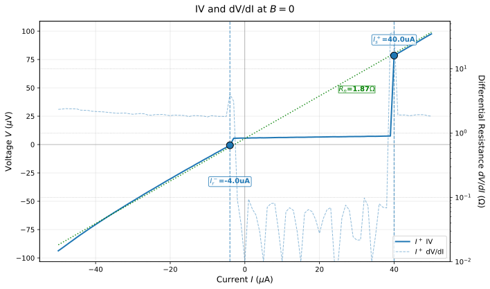
樣品003-2之負向重捕電流及正負向切換電流 I-V 特性曲線
[fig-iv-characteristics] 中清晰地顯示了零電壓的超導區域、急劇的電阻性切換（切換電流 \(I_{s} \approx 40\text{ µA}\) ）以及顯著的遲滯行為（重捕電流 \(I_{r} \approx 4\text{ µA}\) ），反映了該接面處於欠阻尼 (Underdamped) 狀態，使用正常電阻區域數據線性擬合得出正常電阻 \(R_{n}\) 約為 \(1.87\text{ Ω}\) 。
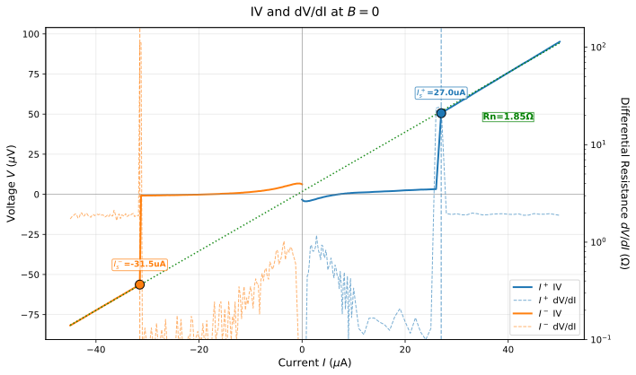
樣品003-2之正負向切換電流 I-V 特性曲線
[fig-iv-dvdi-comparison] 是由正負偏壓量測拼接而成的正負向切換電流 I-V 特性曲線。正向切換電流 \(I_{s}^{+} \approx 27\text{ µA}\) ，負向切換電流 \(I_{s}^{-} \approx - 33.5\text{ µA}\) ， \(\Delta I_{s} \approx - 6.5\text{ µA}\) ，\(\eta \approx 10.7\%\) 。雖出現 \(I_{s}^{+} \neq \left| I_{s}^{-} \right|\) ，但此為SQUID樣品003-2的參考接面及目標接面並聯的結果。可能因熱擾動或接面間的微小相位差異所導致，無法直接斷定為約瑟夫森二極體效應。需由之後的電流電壓磁場掃描測量來驗證。
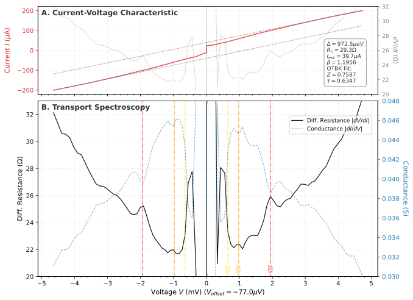
PtTe2 約瑟夫森接面的直流傳輸特性與多重安德烈夫反射 (MAR)。 (a) 在基溫 (T ≈ 40, mKI V I c μ AI exc d V /d I V V n Δ / ne n = 1, 2, 3Δ ≈ 0.9725 meVZ ≈ 0.7587τ ≈ 0.6347β ≈ 1.1956e I exc R n Δ
[fig-MAR] 展示的多重安德烈夫反射（Multiple Andreev Reflection, MAR）特性，為樣品接面品質優良的有力證據，然而因超電流（Supercurrent）過大，無法直接量測到線性電阻區域，即大於 \(2\Delta\) 的範圍。圖中標示的過電流(Excess Current) \(I_{\text{excess}}^{+} \approx 42.3\text{ µA}\) 僅能作為大致估計，實際的過電流按趨勢應大於此值。同時，由自熱效應引起的溫升也需加以考慮。 我們在微分電阻 (\(dV/dI\) ) 頻譜 [圖 1(b)] 中觀察到顯著的次諧波能隙結構，這提供了電荷傳輸是由多重安德烈夫反射 (MAR) 主導的直接證據。電阻谷的位置與理論公式 \(V_{n} = 2\Delta/ne\) 高度吻合，使我們得以確立超導能隙為 \(\Delta \approx 0.97\text{ meV}\) 。為了定量分析介面透明度，我們針對高偏壓數據進行了 Octavio-Tinkham-Blonder-Klapwijk (OBTK) 模型擬合。分析結果顯示介面阻抗參數 \(Z \approx 0.76\) ，對應之穿透率 \(\tau \approx 0.63\) 。此高透明度意味著超電流的限制因素並非來自介面阻障，而是主要源於 \(\text{PtTe}_{2}\) 通道內部的擴散散射過程。
值得注意的是，量測所得的 \(I_{c}R_{n}\) 積約為 \(0.70\text{ mV}\) ，此數值低於短彈道接面 (Short ballistic junction) 的理論極限 (\(I_{c}R_{n} \approx \pi\Delta/2e \approx 1.52\text{ mV}\) )。為了釐清此數值的物理起源，我們檢視了元件的特徵長度尺度。給定接面長度 \(L = 260\text{ nm}\) ，我們發現實驗數據與擴散極限 (Diffusive limit) 高度吻合。利用長接面理論公式 \(eI_{c}R_{n} \approx 10.82E_{\text{Th}}\) [Dubos et al., PRB 2001]，我們提取出的 Thouless 能為 \(E_{\text{Th }} \approx 65\mu\text{ eV}\) 。
由此推算的擴散係數 \(D = E_{\text{Th }}L^{2}/h \approx 0.0067\text{ m}^{2}/\text{ s}\) ，在費米速度 \(v_{F} \approx 0.65 \times 10^{6}\text{ m/s}\) 的估算下，對應之平均自由徑 \(l_{e} = 3D/v_{F} \approx 31\text{ nm}\) 。這表明比值 \(L/l_{e} \approx 8.4\) ，確認元件運作於明確的擴散區間 (\(L \gg l_{e}\) )。此外，擴散相干長度估算為 \(\xi_{\text{diff }} = \sqrt{hD/\Delta} \approx 67\text{ nm}\) ，使得 \(L/\xi_{\text{diff }} \approx 4\) 。這證實了我們的 \(\text{PtTe}_{2}\) 接面屬於「長擴散約瑟夫森接面」類別，其超電流大小受限於電子穿越接面所需的擴散時間 (即 Thouless 能)，而非超導能隙。此結果成功解釋了為何在高介面透明度 (\(\tau \approx 0.63\) ) 下，\(I_{c}R_{n}\) 數值仍小於短接面理論極限的主因，並展示了 \(\text{PtTe}_{2}\) 在擴散長度尺度下仍保有良好的相位同調性。
在高於超導能隙 (\(eV > 2\Delta\) ) 的偏壓區間，我們觀察到微分電阻 (\(dV/dI\) ) 並未如 BCS 理論預期飽和至恆定的正常態電阻 \(R_{n}\) ，而是呈現隨電壓單調上升的趨勢 [圖 1(b)]。此現象主要歸因於接面處的焦耳熱效應 (Joule Heating) 累積導致的電子溫度 (\(T_{e}\) ) 升高。在極低溫 (\(T \approx 20\text{ mK}\) ) 環境下，電子-聲子耦合 (electron-phonon coupling) 極弱，導致熱電子難以將能量耗散至晶格。
此外，為了濾除高頻雜訊以優化低溫量測，我們的樣品PCB載台配置了 RC 濾波電路。串聯電阻元件在高注入電流下產生的額外熱量，可能進一步透過基板傳導或準粒子擴散影響接面溫度。這種由熱效應引起的電阻上翹是介觀超導元件測量中常見的非本徵效應 (extrinsic effect)。
座標系定義與轉換 (Coordinate System Definition and Transformation)
為了精確描述外部磁場與樣品超導特性的關係，我們必須建立實驗室座標系 (Lab Frame) 與樣品座標系 (Sample Frame) 之間的轉換關係。這對於分析非對稱 SQUID 的夫朗和費圖樣以及電流-相位關係 (CPR) 至關重要。
實驗室與樣品座標系定義
實驗室座標系 (Lab Frame) ：\((X,Y,Z)\)
\(X,Y,Z\) 軸由固定於低溫量測系統的由三維向量磁鐵的磁場指向定義。
\(X\) 軸沿水平方向指向右。
\(Y\) 軸沿水平方向且垂直於 \(X\) 軸指向外側。
\(Z\) 軸垂直於 \(X\) 軸且指向上方軸則與 \(X,Y\) 軸共同形成右手座標系。
磁場大小表示為\(B_{\text{lab }} = \left( B_{x},B_{y},B_{z} \right)\)
樣品座標系 (Sample Frame) ：\((X',Y',Z')\)
\(X',Y',Z'\) 軸由樣品本身的幾何與樣品接面電流方向定義。
\(X'\) 軸(Longitudinal)：沿樣品長軸方向，即樣品接面內超導電流 \(I\) 的流動方向。
\(Y'\) 軸(Transverse)：沿樣品寬度方向，位於樣品平面內且垂直於電流。
\(Z'\) 軸(Normal)：垂直於樣品平面的法向量方向。
磁場大小表示為\(B_{\text{sample }} = \left( B_{x'},B_{y'},B_{z'} \right)\)
在本實驗中，樣品被水平放置於實驗室的 \(X - Z\) 平面內，因此樣品平面（\(X' - Y'\) 平面）與實驗室 \(X - Z\) 平面共面，而樣品法向量 \(Z'\) 軸平行於實驗室 \(Y\) 軸。
由於樣品在平面內的放置角度並非總是與實驗室主軸對齊，因此引入旋轉角 \(\alpha\) 以描述平面內的偏轉。
定義旋轉角 \(\alpha\) 為：在實驗室 \(X - Z\) 平面中，從實驗室 \(+ X\) 軸逆時針旋轉至樣品電流方向（\(X'\) 軸）的角度。
基底向量與旋轉矩陣
依據上述幾何配置，樣品座標系三個基底向量在實驗室座標系中的表示如下：
\[\begin{array}{r}
\hat{z'} = (0,1,0) \\
\hat{x'} = \left( \cos(\alpha),0,\sin(\alpha) \right) \\
\hat{y'} = \hat{z'} \times \hat{x'} = \left( \sin(\alpha),0, - \cos(\alpha) \right)
\end{array}\]
因此，旋轉矩陣 \(R\) （由實驗室座標系轉換至樣品座標系）可寫為：
\[R = \begin{pmatrix}
\cos(\alpha) & 0 & \sin(\alpha) \\
\sin(\alpha) & 0 & - \cos(\alpha) \\
0 & 1 & 0
\end{pmatrix}\] 此旋轉矩陣 \(R\) 滿足正交條件 \(RR^{T} = I\) ，且 \(\det(R) = 1\) ，確保此為遵循右手定則。
實驗室座標系中的磁場 \(\mathbf{B_{\text{lab}}} = \left( B_{x},B_{y},B_{z} \right)\) 轉換至樣品座標系之表示式為：
\[\begin{pmatrix}
B_{x'} \\
B_{y'} \\
B_{z'}
\end{pmatrix} = R\begin{pmatrix}
B_{x} \\
B_{y} \\
B_{z}
\end{pmatrix} = \begin{pmatrix}
\cos(\alpha) & 0 & \sin(\alpha) \\
\sin(\alpha) & 0 & - \cos(\alpha) \\
0 & 1 & 0
\end{pmatrix}\begin{pmatrix}
B_{x} \\
B_{y} \\
B_{z}
\end{pmatrix}\]
展開後得：
\[\begin{array}{r}
B_{x'} = B_{x}\cos(\alpha) + B_{z}\sin(\alpha) \\
B_{y'} = B_{x}\sin(\alpha) - B_{z}\cos(\alpha) \\
B_{z'} = B_{y}
\end{array}\]
其中，\(B_{z'}\) 代表面外磁場 (Out-of-plane field)，而面內磁場 (In-plane field) 的強度 \(B_{\text{In-Plane}}\) 與角度 \(\theta\) 則可由 \(B_{x'}\) 與 \(B_{y'}\) 計算得出：
\[\begin{array}{r}
B_{\text{in-plane }} = \sqrt{B_{x'}^{2} + B_{y'}^{2}} \\
\theta = \arctan(\frac{B_{y'}}{B_{x'}})
\end{array}\]
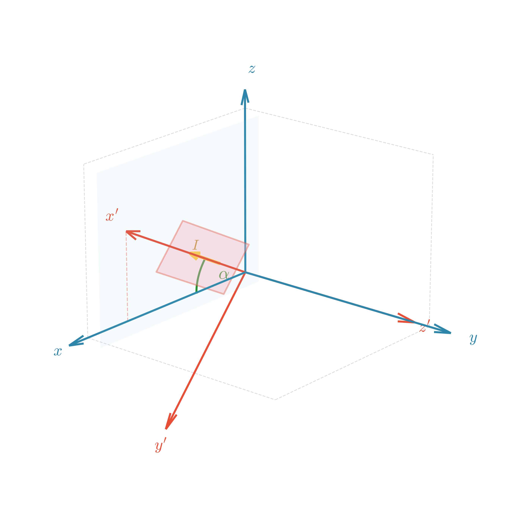
實驗室座標系 (X , Y , Z ) （藍色）與樣品座標系 (X ′ , Y ′ , Z ′ ) （紅色）之幾何關係。 樣品平面（粉色矩形）位於 X Z X ′ X α
實例說明：Sample 003-2
以本章主要分析的樣品 Sample 003-2 為例，其安裝角度經校準為 \(\alpha = 121.3^{{^\circ}}\) 。這意味著樣品的電流方向與實驗室 \(X\) 軸與 \(Z\) 軸之間存在特定的幾何關係，而非單純的平行或垂直。
當我們在實驗室座標系中施加一個磁場向量 \(\left( B_{x},B_{y},B_{z} \right)\) 時，其實際作用於樣品的效果必須透過上述轉換關係進行解析。例如，若僅施加實驗室 \(X\) 方向的磁場，在樣品座標系中將同時產生沿電流方向（\(B_{x'}\) ）與垂直電流方向（\(B_{y'}\) ）的分量，從而對夫朗和費干涉圖樣與電流相位關係產生複合影響。此一精確的座標轉換對於正確解讀後續章節中的各向異性磁場響應至關重要。
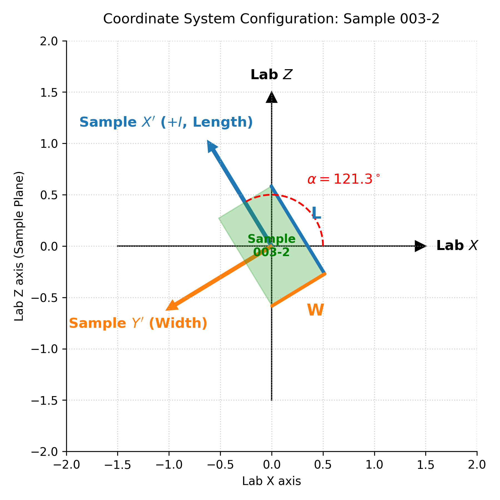
Sample 003-2 的座標系配置示意圖。樣品位於實驗室 X − Z α = 121.3∘ x ′
夫朗和費圖樣 (\(B_{\text{in-plane }} = 0\) )
為了探測接面內部超導電流的空間分佈特性，我們量測了切換電流 \(I_{s}\) 作為面外磁場 (\(B_{z}'\) ) 函數的調變行為。[fig-fraunhofer-heatmap] 展示了原始的電壓-電流-磁場 (V-I-B) 掃描熱圖，其中深色區域代表零電阻的超導態。接著，我們從中提取出切換電流 \(I_{s}\) ，如 [fig-fraunhofer-standard] 所示。這構成了在沒有面內磁場 (\(B_{\text{in-plane }} = 0\) ) 時的類夫朗和費干涉圖樣。
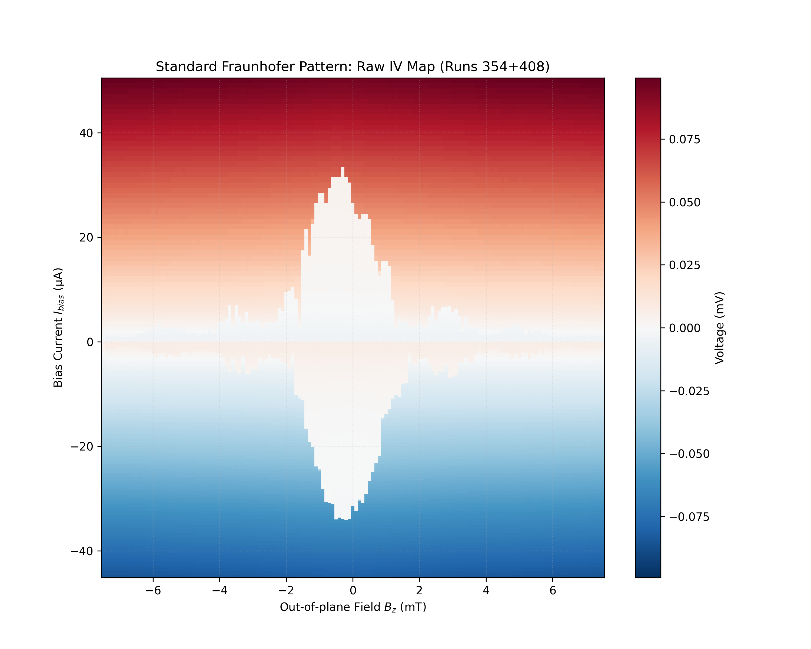
夫朗和費干涉圖樣的原始量測數據熱圖 (V I , B z ′
[fig-fraunhofer-heatmap] 由003-2樣品的正偏壓（Run 354）與負偏壓（Run 408） 數據合成，展示了清晰的超導區間(白色區域)隨磁場的調變。
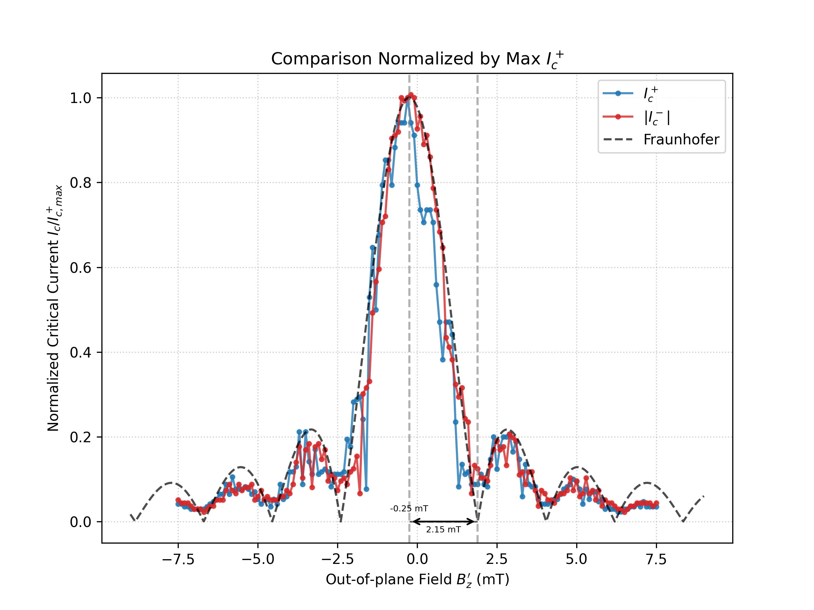
正規化切換電流 (I s B z ′
\(I_{s}\) ) 隨面外磁場 (\(B_{z}'\) ) 的變化，已對 Run 354 最大值進行正規化。灰色垂直虛線標示偏移中心與第一個週期節點，水平箭頭指示週期 \(B_{\text{period }} \approx 2.15\text{ mT}\) 。 類夫朗和費干涉圖樣 (\(B_{\text{in-plane }} = 0\) )。臨界電流隨面外磁場 (\(B_{z}'\) ) 的變化呈現出類 \(|\frac{\sin(\pi\frac{\Phi}{\Phi_{0}})}{\pi\frac{\Phi}{\Phi_{0}}}|\) 的形式。
實驗結果顯示在面外磁場\(B_{z}'\) 約為 0.25 mT 時，切換電流達到最大值 \(I_{\text{s, max}}\) ，第一個極小值節點出現在面外磁場\(B_{z}'\) 約為 1.9 mT 處，但有顯著的節點抬升現象，整個干涉圖樣呈現高度的左右對稱性，且正向切換電流 \(I_{c}^{+}\) 與負向切換電流絕對值 \(|I_{c}^{-}|\) 的行為幾乎完全重合。
這些特徵表明接面具有均勻的超導電流密度分佈。根據第一個節點的位置，我們可以估算出樣品接面的有效磁學面積： \[A_{\text{eff }} = \frac{\Phi_{0}}{B_{\text{period }}} \approx 2.07 \times \frac{10^{- 15}}{2.15 \times 10^{- 3}} \approx 9.63 \times 10^{- 13}\text{ m}^{2} = 0.963\text{ μm}^{2}\] 這與由光學顯微鏡測量及AutoCAD軟體計算的樣品接面的幾何面積0.8502675 \(\text{μm}^{2}\) 相當。
夫朗和費圖樣隨面內磁場角度的演化
當施加固定面內磁場 (\(B_{\text{In-Plane}}\) ) 時，夫朗和費圖樣隨面內磁場角度發生顯著變化。
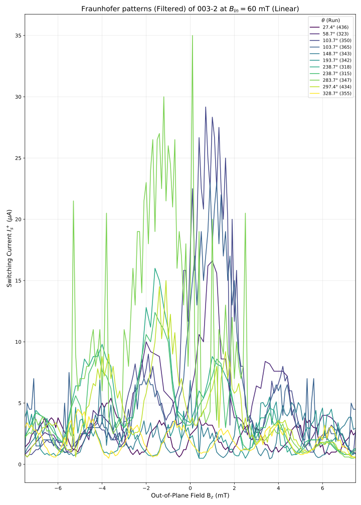
樣品003-2在面內磁場B In-Plane 60 mT 時，夫朗和費圖樣隨角度 θ
[fig-fraunhofer-evolution] 展示了在不同 \(\theta\) 值下的干涉圖樣演化，隨著 \(\theta\) 的增加，原本對稱的干涉圖樣逐漸變得不對稱，對稱軸位置發生偏移，包絡函數形狀也隨之改變。
樣品005-1在面內磁場B In-Plane 60 mT 時，夫朗和費圖樣隨角度 θ
夫朗和費圖樣隨面內磁場強度的演化
當施加固定角度的面內磁場 (\(B_{\text{In-Plane}}\) ) 時，夫朗和費圖樣隨面內磁場強度發生顯著變化。
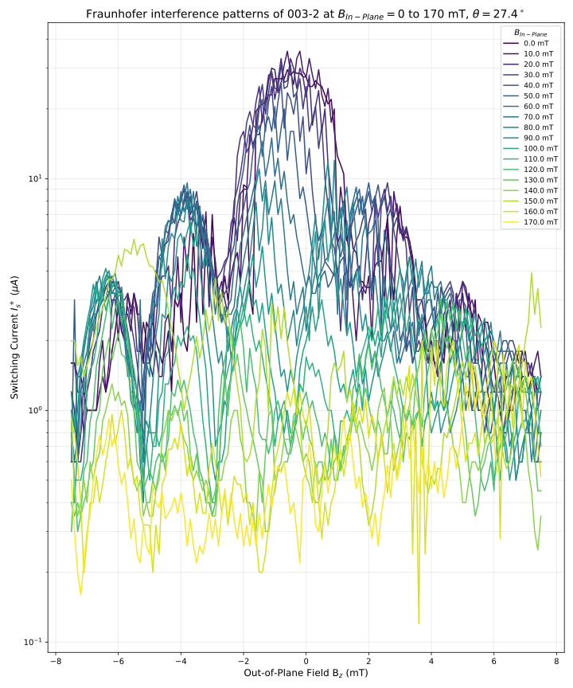
樣品003-2在面內磁場角度θ 27.4∘ 時，夫朗和費圖樣隨磁場強度B In-Plane
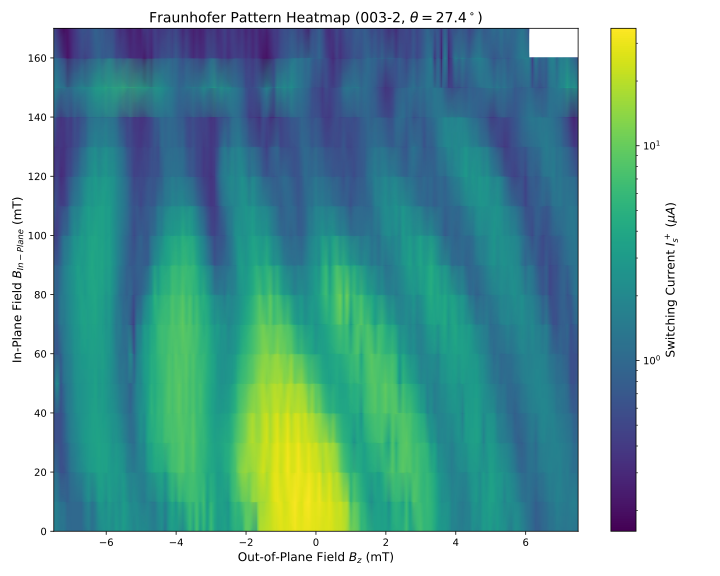
樣品003-2在面內磁場角度θ 27.4∘ 時，夫朗和費圖樣隨磁場強度B In-Plane
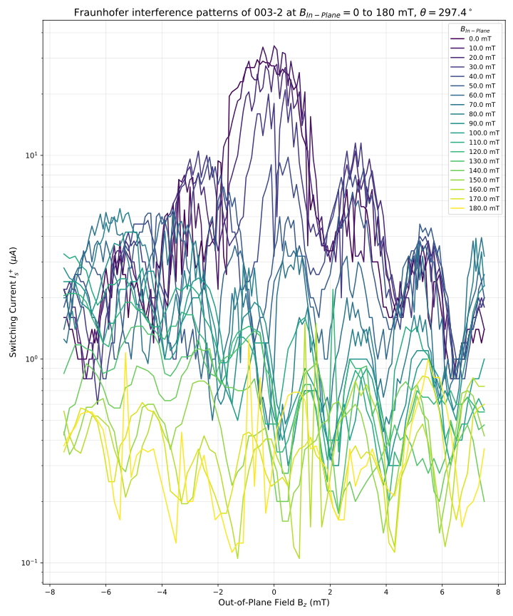
樣品003-2在面內磁場角度θ 297.4∘ 時，夫朗和費圖樣隨磁場強度B In-Plane
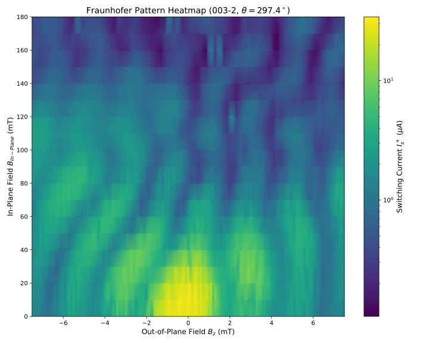
樣品003-2在面內磁場角度θ 297.4∘ 時，夫朗和費圖樣隨磁場強度B In-Plane
垂直/平行電流方向磁場下夫朗和費圖樣的演化
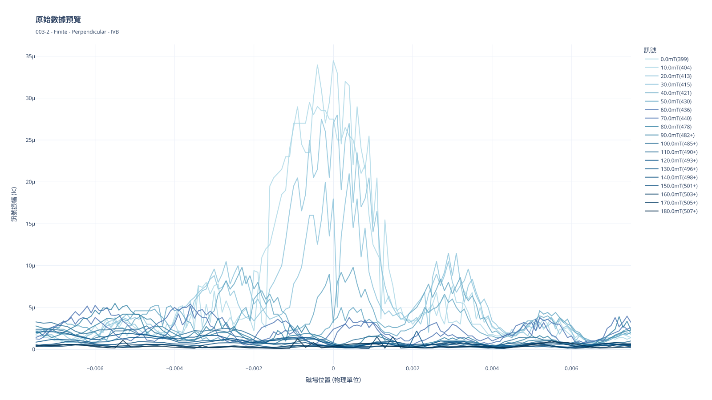
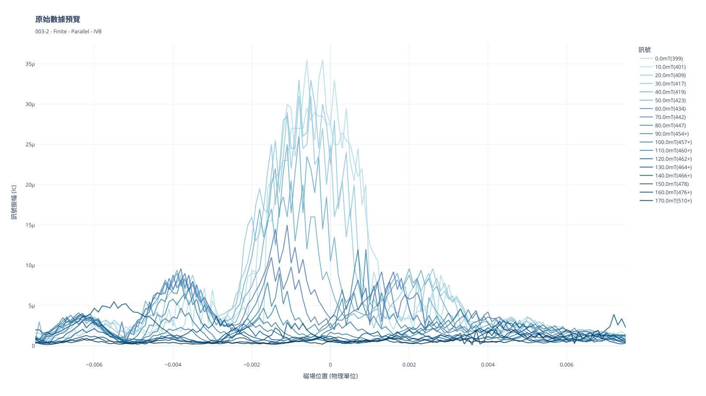
垂直/平行電流方向磁場下夫朗和費圖樣的演化熱圖
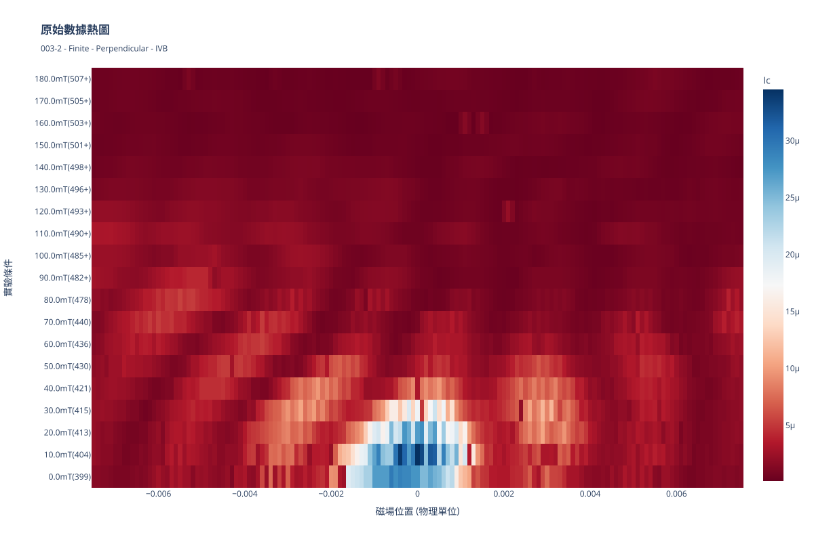
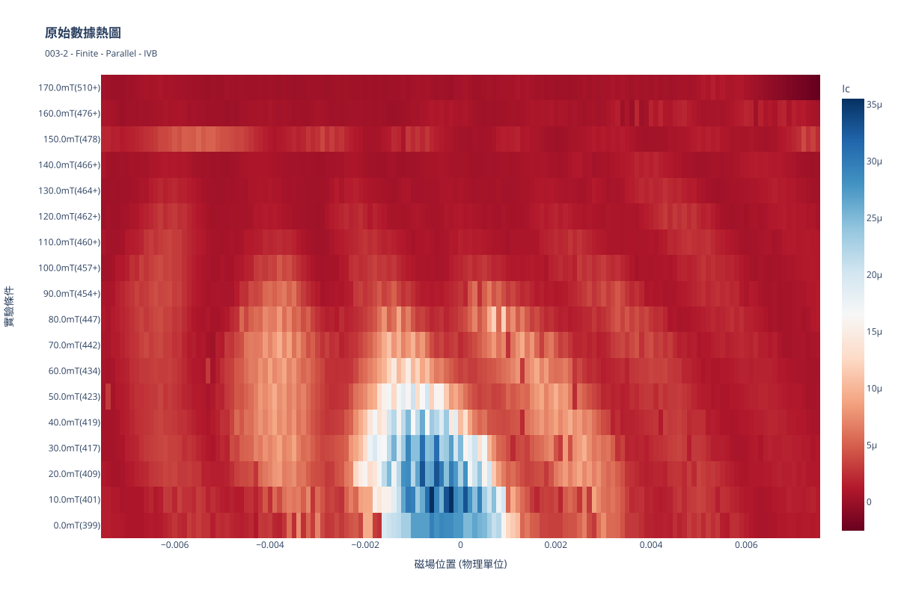
主要觀察結果包括：
圖樣不對稱性增加 ：隨著 \(B_{\text{In-Plane}}\) 的增加，原本高度對稱的夫朗和費圖樣逐漸變得不對對稱
極小值位置偏移 ：干涉圖樣的極小值不再出現在對稱的磁場位置，而是向正或負磁場方向偏移
包絡函數調變 ：整體包絡函數的形狀發生變化，不再嚴格遵循 \(\operatorname{sinc}\) 函數
振幅調變 ：不同極小值的深度出現差異，破壞了原有的週期性
這些變化強烈暗示平面內磁場改變了 PtTe₂ 接面的電流-相位關係，可能產生時間反演對稱性破缺。
電流-相位關係分析
CPR 模型選擇：諧波展開與透明度模型之比較
最原始的S-I-S約瑟夫森接面的電流相位關係為 \(I_{s(\varphi)} = I_{c}\sin(\varphi)\) ，但在實際的S-N-S系統中可能出現多通道與高階諧波分量，導致 CPR 呈現非純正弦特徵。我們可以用最一般的傅立葉級數展開來描述 CPR，其中包含當時間反演對稱被打破時系統中可能存在的高階諧波和附加相位偏移\(\left( \varphi_{n} \right)\) ： \[I_{s}(\varphi) = \sum_{n = 1}^{\infty}I_{n}\sin(n\varphi + \varphi_{n})\]
這是最廣義的 CPR 表達式。任何週期為 2π 的 CPR 都可以展開成這種傅立葉正弦級數。\(I_{n}\) 為第 n 階諧波的振幅。\(\varphi_{n}\) 為第 n 階諧波的相位偏移。在時間反演對稱下，所有 \(\varphi_{n}\) 為零；非零的 \(\varphi_{n}\) 是時間反演對稱破缺的表現。選擇正弦函數是因為約瑟夫森效應的基本關係是正弦型的。高階諧波（n≥2）對應於多重安德烈夫反射過程，即庫珀對（或四重態）的「高階」隧穿。我們選擇將這個 CPR 展開到二階，因為更高階的超電流對總電流的貢獻可以忽略不計。這給出： \[I(\varphi) = I_{1}\sin(\varphi + \varphi_{1}) + I_{2}\sin(2\varphi + \varphi_{2})\] \(\varphi_{1} = \varphi_{2} = 0\) ，會得到一個僅包含一階和二階諧波項而無任何附加相位的 CPR，對應於典型的 \(\varphi\) 接面。在[CPR-general-form] 中令 \(I_{2} = 0\) 的情況，則會產生具有正弦電流-相位關係的異常約瑟夫森接面或 \(\varphi_{0}\) 接面，其相位從零偏移了 \(\varphi_{1}\) 。
現在，不失一般性，\(\varphi\) 可以被 \(\left( \varphi - \varphi_{1} \right)\) 替換，CPR 可以重寫為：
\[I(\varphi) = I_{1}\sin\varphi + I_{2}\sin(2\varphi + \delta)\]
其中引入了 \(\delta = \varphi_{2} - 2\varphi_{1}\) ，即一階和二階諧波項之間的相對相位。我們將把具有如[CPR-with-delta] 所示 CPR 的約瑟夫森接面稱為「二階諧波相位差可調\(\varphi_{0}\) 接面」。
在分析電流-相位關係時，我們選擇採用截斷的傅立葉級數模型 ([CPR-with-delta] )，而非Kulik-Omelyanchuk模型 (\(I(\varphi) \propto \frac{\sin(\varphi)}{\sqrt{1 - \tau\sin^{2}\left( \frac{\varphi}{2} \right)}}\) )。此選擇基於以下兩個主要考量：
極高的透明度要求 ：如 [fig-cpr-harmonics-tau] 所示，若要僅透過透明度模型來解釋我們觀察到的顯著二階諧波分量（\(\frac{I_{2}}{I_{1}} \approx 0.25\) ），接面的透明度 \(\tau\) 必須達到約 0.90。這是一個非常嚴格的物理條件，通常僅在完美的單原子接觸或極高品質的界面中才能實現。
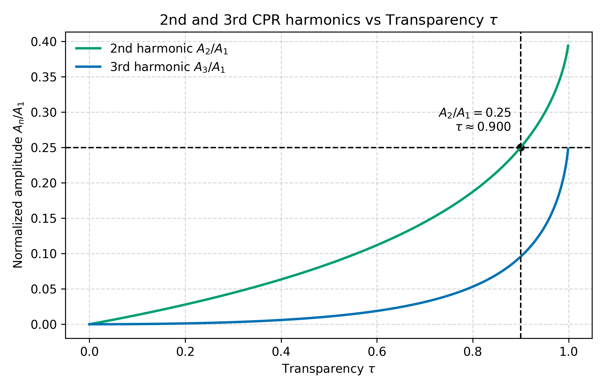
二階與三階諧波分量隨透明度 τ \(\frac{I_{2}}{I_{1}} = 0.25\) τ ≈ 0.90
時間反演對稱性的破缺 ：標準的Kulik-Omelyanchuk模型通常假設時間反演對稱性，導致 \(I_{c}^{+} = |I_{c}^{-}|\) （如 [fig-cpr-diode-comparison] 綠色曲線所示）。然而，我們的實驗數據顯示明顯的時間反演對稱性的破缺 (\(I_{c}^{+} \neq |I_{c}^{-}|\) )。為了描述這種時間反演對稱性的破缺，必須引入高階諧波的相位偏移 \(\delta\) 。然而標準的Kulik-Omelyanchuk模型隱含對高階諧波的相位偏移 \(\delta\) 的限制，\(\delta\) 必須固定於0。反而簡單的諧波展開模型多了這種自由度（如 [fig-cpr-diode-comparison] 紫色曲線所示），能夠靈活地描述此系統。
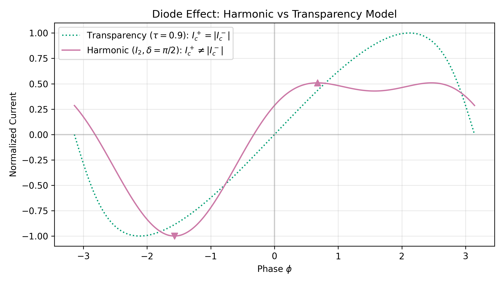
透明度模型與諧波模型的比較。
\(I_{c}^{+} = |I_{c}^{-}|\) 的對稱性。含有相位偏移的諧波模型 (紫線) 則能自然描述 \(I_{c}^{+} \neq |I_{c}^{-}|\) 的約瑟夫森二極體效應。 基於上述理由，採用包含相位自由度的諧波展開模型，是對本系統非傳統超導電流特性的更合適描述。
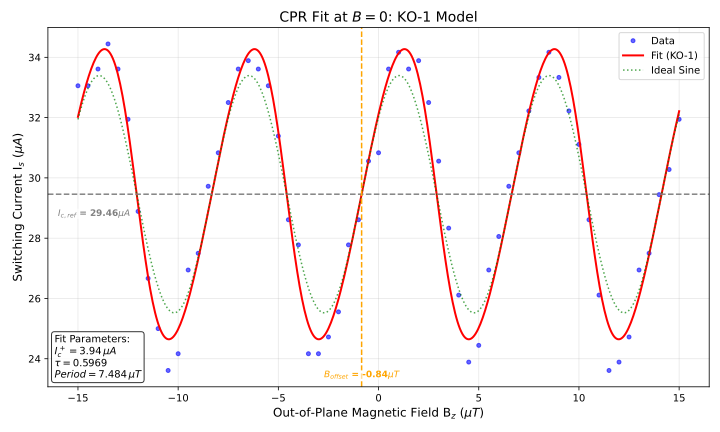
使用Kulik-Omelyanchuk模型擬合典型 PtTe₂ 約瑟夫森接面的電流相位關係特性曲線
在無面內磁場時，使用Kulik-Omelyanchuk模型擬合典型 PtTe₂ 約瑟夫森接面的電流相位關係特性曲線。得出介面透明度為 \(\tau \approx 0.6\) ，屬於中高透明度接面。
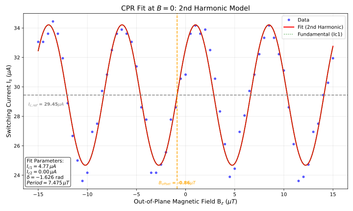
使用二階諧波相位差可調模型擬合典型 PtTe₂ 約瑟夫森接面的電流相位關係特性曲線
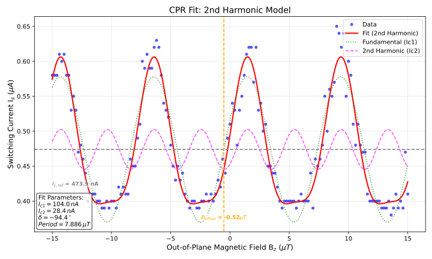
樣品003-2在面內磁場強度為180 mT ，角度為297.4∘ 的二階諧波相位差可調模型擬合結果
[fig-cpr-fit-508] 顯示在高面內磁場強度時，二階諧波相位差可調模型能夠很好地擬合實驗數據且二階諧波分量顯著。
\(I_{c}R_{N}\) 乘積估算\(I_{c}R_{N}\) 乘積是表徵約瑟夫森接面品質的重要參數，它反映了接面的超導能隙與傳輸特性。[tab-icrn-statistics] 總結了多個元件的 \(I_{c}R_{N}\) 乘積統計資料。
多個 PtTe₂ 約瑟夫森接面的 \(I_{c}R_{N}\) 乘積統計
003-2
29.459
3.935
1.848
54.439
7.272
003-3
19.111
3.133
3.161
60.403
9.903
004-1
24.0
29.3
703.2
004-2
44.0
33.953
1493.931
004-3
64.0
34.105
2182.72
005-1
121.496
3.305
0.297
36.11
0.982
005-2
44.275
3.203
1.049
46.435
3.359
019-1
22.834
2.583
0.662
15.106
1.709
019-3
19.2
1.238
23.765
019-5
22.0
2.971
65.364
平均值 41.038 3.232 10.858 468.147 4.645
SQUID 環路電感與自我屏蔽效應評估
為了驗證模型的適用性，我們估算了 SQUID 環路的幾何電感 \(L\) 。對於面積約 \(250\text{ µm}^{2}\) 的環路，幾何電感估計為 \(L \approx 3\) pH。考量最大臨界電流 \(I_{c}^{\text{max }} \approx 100\) µA，計算出的屏蔽參數 \(\beta_{L} = 2\pi L\frac{I_{c}}{\Phi_{0}} \approx 0.001\) 。由於 \(\beta_{L} < < 1\) ，自我屏蔽效應可以忽略，這證實了我們採用顯式 CPR 模型 (\(I_{s(\varphi)}\) ) 而忽略迴路電感影響的合理性。
CPR 參數隨面內磁場的各向異性演化
為了探究不同晶體方向上的磁場響應差異，我們針對 Sample 003-2 在兩個特定角度 (\(\theta = 27.4^{{^\circ}}\) 與 \(297.4^{{^\circ}}\) ) 進行了細緻的磁場掃描。
樣品003-2 在特定角度\(\theta\) 下的參數演化 (\(27.4^{{^\circ}}\) vs \(297.4^{{^\circ}}\) )。(左) \(\theta = 27.4^{{^\circ}}\) 。(右) \(\theta = 297.4^{{^\circ}}\) 。
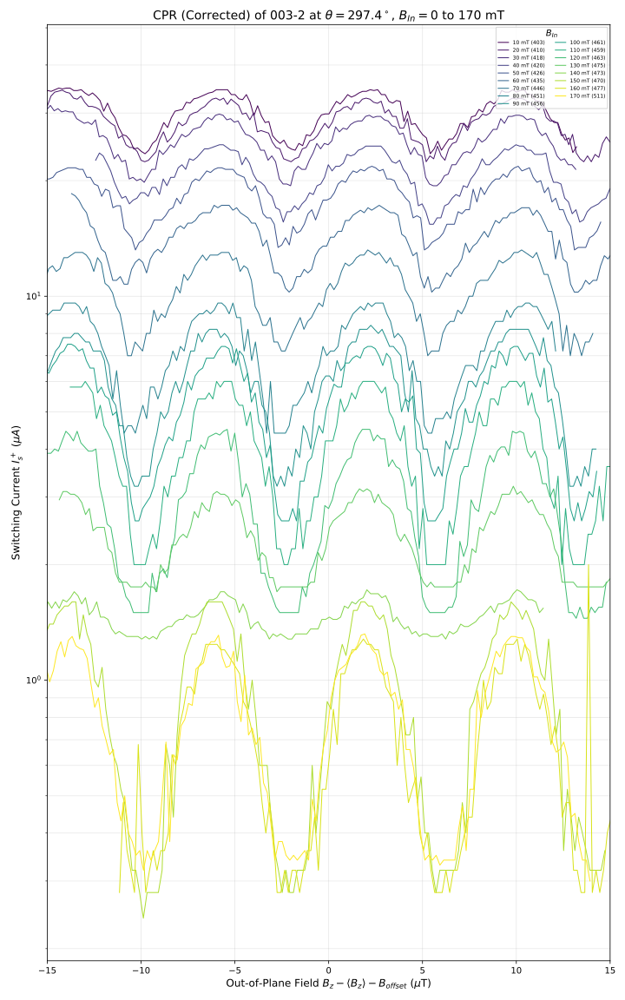
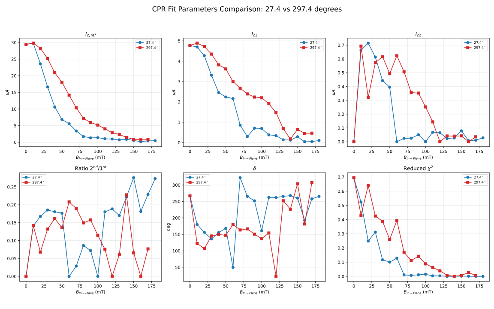
CPR擬合參數隨面內磁場的演化。
[fig-cpr-fit-parameters-evolution] 展示了關鍵數參 (\(I_{\text{c, ref}},I_{c1},I_{c2},\frac{I_{c2}}{I_{c1}},\delta,\chi^{2}\) ) 隨面內磁場強度的演化。從擬合參數的演化可以觀察到參考接面臨界電流 \(I_{\text{c,ref}}\) 、\(I_{c1}\) 、\(I_{c2}\) 在不同夾角\(\theta\) 下的面內場\(B_{\text{In-Plane}}\) 作用下的下降趨勢有別，因此可能需要考慮參考介面的面內磁場作用，所以此參數演化統計的可靠性值得商榷，但依然可以從中提取出一些有用的物理現象。在低面內場時，\(\frac{I_{c2}}{I_{c1}}\) 與 \(\delta\) 的數值較低，擬合誤差也較大，需要提升量測精度，以獲得更準確的結果。然而在高面內場時，\(\frac{I_{c2}}{I_{c1}}\) 與 \(\delta\) 的數值較高，擬合誤差也較小，二階諧波相位可調模型可以很好地描述現象，但固定夾角\(\theta\) 時的面內場\(B_{\text{In-Plane}}\) 強度與\(\frac{I_{c2}}{I_{c1}}\) 和 \(\delta\) 的關係並非簡單的線性關係，這可能暗示了更複雜的物理現象，並非完全如 (Sivakumar et al. 2024 ) 所述使用Rashba效應與SOC效應造成的自旋-動量耦合現象即可描述，因此樣品目標接面長度更長，面內場\(B_{\text{In-Plane}}\) 更強，需要考慮更多因素。
結果總結
本章的實驗結果確立了以下重要發現：
高品質的 PtTe₂ 約瑟夫森接面 ：成功製備了具有清晰超導特性和良好電學性能的元件。
非傳統的電流-相位關係 ：直接觀測到包含顯著二階諧波分量的非純正弦 CPR。
高面內磁場下的顯著二階諧波分量與相位差 ：觀察到高面內磁場下的 CPR 中二階諧波分量與相位差的顯著變化，這表明了磁場對 CPR 的調控作用。
這些結果為理解 PtTe₂ 中的非傳統的電流-相位關係提供了直接的實驗證據，並展示了利用外部磁場調控量子元件特性的巨大潛力。